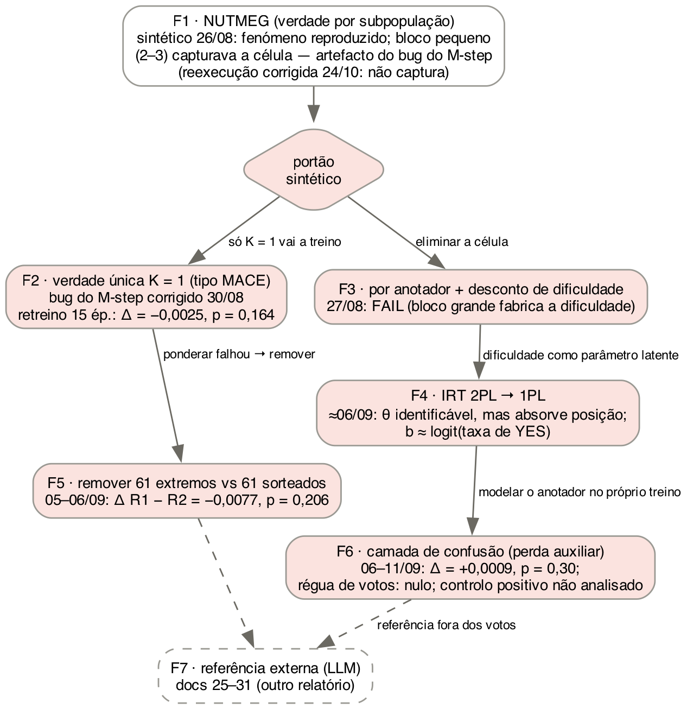
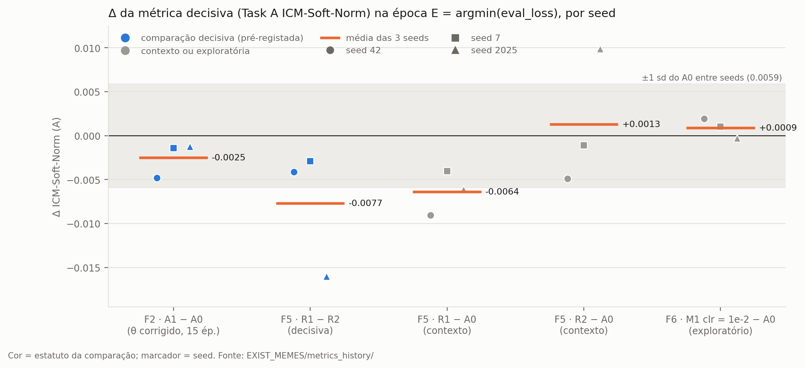
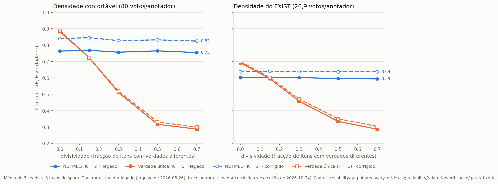
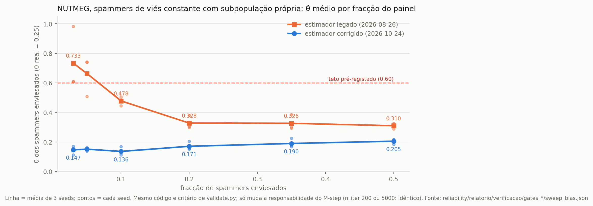
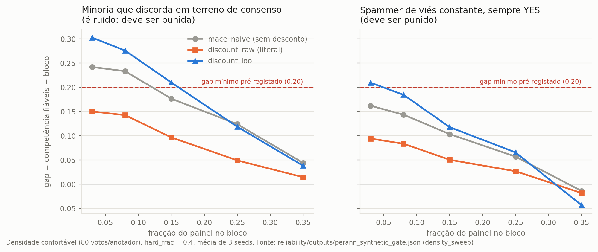
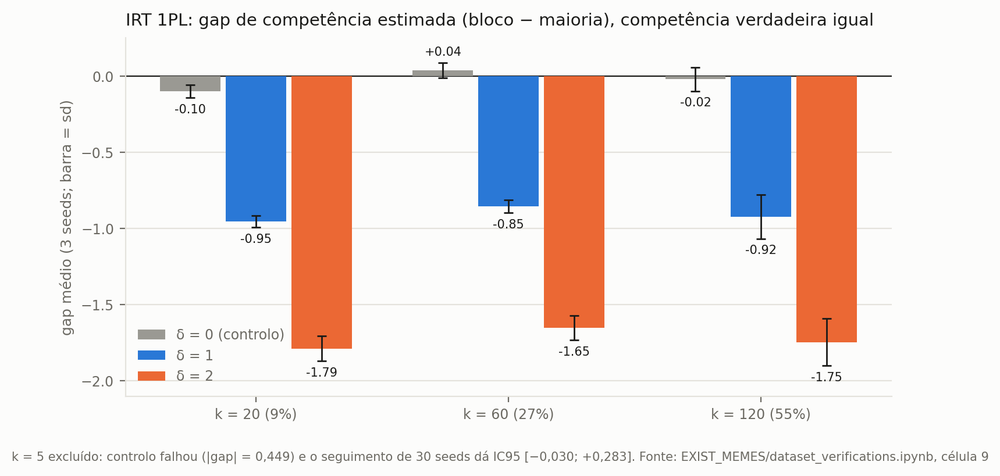
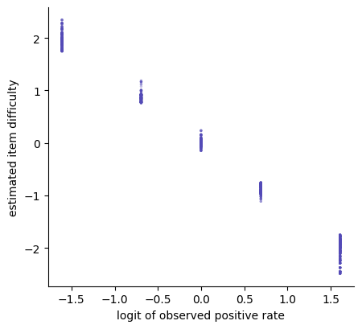
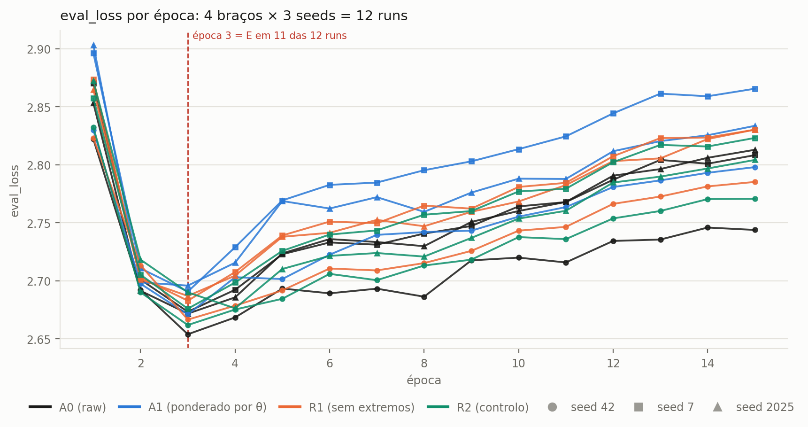
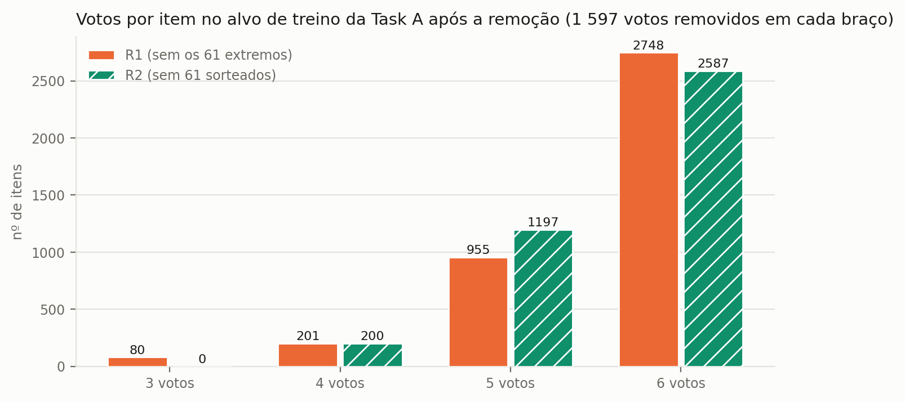
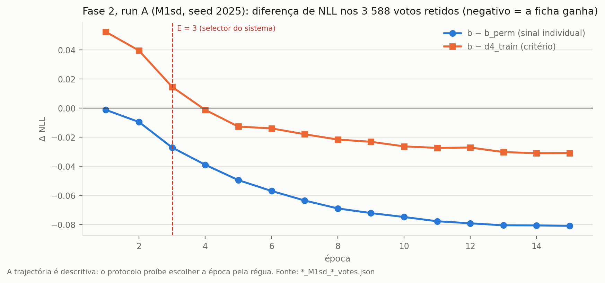

NUTMEG, agregação de verdade única, desconto de dificuldade, IRT, ablação e camada de confusão: metodologia e resultados
Jonathan Santos da Silva · EXIST 2026 (Task 2.1, memes) · versão de 2026-10-24
Parte A: Metodologia (implementação) · Parte B: Relatório de resultados
O que é este documento. É a descrição completa e reprodutível de como cada estimador de confiabilidade de anotadores foi construído, validado e (quando chegou a isso) usado para retreinar o modelo de memes do EXIST 2026. Cobre a linha reliability/ (2026-08-26 a 2026-09-14). Os resultados numéricos estão no documento irmão, RELATORIO_RELIABILITY.md; aqui só aparecem os números necessários para descrever o desenho (tamanhos, limiares, parâmetros). A linha do anotador LLM (GLM-4.6V-Flash e Claude, docs 25 a 31) está descrita em EXIST_MEMES/glm_annotator/METODOLOGIA_GLM_CLAUDE.md e só é referida aqui.
Este texto serve de insumo para os capítulos de implementação e de resultados da dissertação. Tudo o que é número tem a fonte entre parênteses. Os artefactos citados estão em reliability/outputs/ salvo indicação em contrário.
[MEDIDO]: número observado, com o artefacto que o produziu.[HIPÓTESE]: interpretação plausível, não testada. Não escrever como facto.[LIMITAÇÃO]: restrição que o texto da tese tem de declarar.[PÓS-HOC]: decidido depois de ver um resultado. Nunca tem o estatuto de um resultado pré-registado.EXIST_MEMES/metrics_history/). Os scripts estão em reliability/relatorio/verificacao/ (§13).A pergunta comum a todas: é possível estimar, a partir dos dados do EXIST, uma confiabilidade por anotador que separe ruído de discordância legítima, e usá-la para construir um alvo de treino melhor? Sob o paradigma Learning with Disagreement (LeWiDi), a discordância é sinal; um estimador útil tem de punir ruído sem punir perspectivas minoritárias consistentes.
| # | Família | Unidade de estimação | Implementação | Foi a dados reais? | Foi a retreino? |
|---|---|---|---|---|---|
| F1 | NUTMEG (EM com verdade por subpopulação) | célula (item, subpopulação) | reliability/nutmeg_em.py (NutmegEM, K ≥ 2) |
sim: θ em 6 definições de subpopulação | não |
| F2 | Agregação bayesiana de verdade única (tipo MACE) | anotador, verdade por item | o mesmo NutmegEM com K = 1 (single_truth_K1) |
sim | sim: soft labels ponderadas por θ (A1) |
| F3 | Por anotador com desconto de dificuldade | anotador (~27 votos) | reliability/perann_reliability.py |
não (reprovado no sintético) | não |
| F4 | Teoria de Resposta ao Item (IRT 2PL → 1PL) | anotador + item | EXIST_MEMES/dataset_verifications.ipynb |
sim (ajuste por painel linguístico) | não |
| F5 | Ablação de anotadores extremos (remover, contra controlo pareado) | anotador (regra por yes_rate) |
EXIST_MEMES/reliability_tests.ipynb |
sim | sim: R1 vs R2 |
| F6 | Camada de confusão (matriz 2×2 por anotador como perda auxiliar) | anotador, aprendido no treino | EXIST_MEMES/confusion_core.py + memes_confusion.ipynb |
sim | sim (Fase 1 e Fase 2, parcial) |
| — | Diagnósticos descritivos (não são estimadores) | — | divisiveness.py, behavioral_profile.py, run_behavioral_diagnosis.py, validate_latent_dimension.py, EXIST_MEMES/Untitled.ipynb |
sim | não |
| F7 | Referência externa (LLM como anotador) | anotador, referência fora dos votos | EXIST_MEMES/glm_annotator/ |
sim | sim (docs 27, 28) — fora deste documento |
Mapeamento com o cap07.tex. A subsecção do IRT no cap07.tex diz que "quatro famílias independentes" foram avaliadas: a Bayesian aggregation model, a subpopulation model, a heuristic estimator with difficulty discounting, and a psychometric model. A correspondência é F2, F1, F3 e F4, respectivamente. Evidência para "Bayesian aggregation model" = F2 (K = 1, tipo MACE): (i) o mesmo parágrafo lista "subpopulation model" como item separado, e no texto da tese o NUTMEG é o modelo de subpopulação (cap02.tex, parágrafo de ivey2025nutmeg); (ii) o cap02.tex apresenta o MACE dentro dos "Bayesian models of annotation" (paun2018comparing); (iii) o estimador K = 1 usa priors Beta(0,5; 0,5) em θ e Dirichlet(0,5) em ξ e um M-step MAP, ou seja, é um modelo bayesiano de agregação (em_convergence_diagnosis.md §0). O autor concorda com o mapeamento (2026-10-24); a evidência acima é a que o sustenta. Pendência: com a camada de confusão (F6) as famílias passam a ser cinco, e o CONFUSION_EXPERIMENT.md §16 já regista que a frase do cap07.tex tem de ser corrigida; com a ablação (F5) e a referência LLM (F7) a contagem depende de como a tese agrupar "estimar" e "usar" uma estimativa (ver relatório §20).
| Experimento | Data | Pré-registo | Execução | Veredito |
|---|---|---|---|---|
| F1 · grade de recuperação (sintético) | 2026-08-26 | limiares em validate.py |
3 seeds × 5 divisividades × 3 taxas de spam × 2 densidades | fenómeno reproduzido; teto ≈ 0,60 na densidade do EXIST |
| F1 · preservação de minoria | 2026-08-26 | sim | 3 seeds | PASS |
| F1 · spammer de viés constante (20%) | 2026-08-26 | sim | 3 seeds × 3 modos × 2 rótulos | PASS (com uma célula de fronteira, §4.6) |
| F1 · stress-sweep de bloco pequeno | 2026-08-26 | diagnóstico secundário | 6 frações × 3 seeds | quebra com 2–3 spammers (estimador legado) |
| F1 · portões reexecutados com o estimador corrigido | 2026-10-24 (esta revisão) | mesmos critérios de validate.py |
grade, minoria, viés, sweep | o legado reproduz bit a bit; com o corrigido a quebra por bloco pequeno desaparece (relatório §5) |
| F1/F2 · θ nos dados reais (7 definições) | 2026-08-26, refeito 2026-08-30 | — (descritivo) | CPU | ver relatório §8 |
| Divisividade empírica | 2026-08-26 | regra explícita | 50 permutações por nulo | estrutura demográfica marginal |
| F3 · portão sintético | 2026-08-27 | limiares em validate.py |
3 seeds | FAIL nas duas variantes |
| F2 · bug da responsabilidade do M-step | 2026-08-30 | critérios C1–C4 | — | corrigido; θ e soft labels regenerados (_fixed) |
| F2 · retreino a 2 épocas (θ legado) | 2026-08-30 | critério "efeito > ruído de seed" | 6 runs | nulo, subtreinado |
| F2 · retreino a 15 épocas (θ corrigido) | 2026-08-30/31 | t pareado bilateral, E = argmin(eval_loss) | 6 runs | NULO |
| F2 · nulo por permutação de θ | 2026-08-30 | P1–P5 | ficheiros gerados | nunca treinado |
| F4 · IRT (sintético + real) | ≈ 2026-09-06 | limiares no notebook | 3 seeds (+30 no controlo) | θ identificável; parâmetros inutilizáveis |
| F5 · ablação R1/R2 | runs 2026-09-05; critério 2026-09-06 | decisiva R1 − R2 | 9 runs | NULO |
F6 · Fase 1 (controlo + grelha + braço clr) |
2026-09-06 a 09-09 | §6 do protocolo | 1 + 3 + 3 runs | grelha incompleta; braço exploratório nulo |
| F6 · Fase 2, run A (régua de votos) | 2026-09-11 | §12 do protocolo | 1 run | NULO |
| F6 · Fase 2, run B (controlo positivo) | 2026-09-11 | §12 do protocolo | 1 run | treinada, nunca analisada |
| F6 · Fase 2, runs C/D/E (viés congelado) | — | §17 do protocolo | — | não corridas (dependem da Porta 1) |
| Análise de painéis | 2026-09-14 | — (descritivo) | CPU | limiar pessoal estável (split-half 0,850) |

Figura M1 — Ordem em que as famílias foram testadas e porque cada uma levou à seguinte. Losangos = portões; vermelho = reprovado ou nulo.
Todos os números desta secção foram recalculados a partir de EXIST_MEMES/Dataset/memes/training/EXIST2026_training.json (verificacao/verify_part1.py). Atenção às populações: várias grandezas parecidas referem-se a conjuntos diferentes, e a tabela diz sempre qual.
| Grandeza | Valor | População |
|---|---|---|
| itens (memes) | 3 984 | treino oficial completo |
| votos da Task 2.1 | 23 904 (6 por item, sem excepção) | 3 984 itens |
| anotadores distintos | 887 | 3 984 itens |
| votos YES | 13 286 (fracção 0,5558) | 23 904 votos |
| votos NO | 10 618 | 23 904 votos |
votos UNKNOWN na Task 2.1 |
0 | — |
| itens com 0…6 votos YES | 373 / 459 / 535 / 614 / 672 / 759 / 572 | 3 984 itens |
| itens unânimes | 945 (572 YES + 373 NO) | 3 984 itens |
| itens empatados (3 YES / 3 NO) | 614 | 3 984 itens |
| itens com maioria estrita YES | 2 003 (fracção 0,5028) | 3 984 itens |
| votos por anotador | média 26,95 · mediana 27 · mín. 9 · máx. 54 | 887 anotadores |
| anotadores com menos de 15 votos | 11 | 887 anotadores |
| α de Krippendorff (nominal) | 0,2791 | 3 984 itens, todos os anotadores |
| estratos linguísticos | 437 só ES · 431 só EN · 19 bilingues | 887 anotadores |
| painel ES (para o IRT) | 1 979 itens · 456 anotadores · 11 874 votos · 474 unânimes · YES 0,573 | itens lang = es |
| painel EN (para o IRT) | 2 005 itens · 450 anotadores · 12 030 votos · 471 unânimes · YES 0,539 | itens lang = en |
| painéis fixos de 6 anotadores | 151 (≈ 26,4 itens por painel) | 3 984 itens |
| anotadores num único painel | 868 de 887 (19 em dois painéis) | 887 anotadores |
| composição de cada painel | exactamente 1 anotador em cada célula género × idade (F/M × 18-22/23-45/46+) nos 151 painéis | 151 painéis |
Notas que evitam confusões frequentes:
yes_rate dos 887 anotadores (média de proporções, não proporção global).Untitled.ipynb, passo 7).reliability/outputs/split_taskA_frozen.json: 3 386 itens de treino / 598 de validação, interseção vazia, train_test_split com random_state = 42, test_size = 0,15, estratificado pelo voto maioritário do alvo cru (p_YES ≥ 0,5), resolvido uma vez a partir do alvo cru (make_soft_labels_taskA.py). Todos os braços de todos os retreinos carregam este ficheiro. Razão: se o split fosse refeito a partir de cada alvo, 421 itens mudariam de estrato no braço ponderado e parte de qualquer Δ viria do split, não da intervenção (soft_labels_taskA_report_fixed.md §6). Distribuição de votos YES nos 3 386 itens de treino: 316 / 388 / 458 / 518 / 585 / 645 / 476. Os 598 itens de validação somam 3 588 votos (usados como régua na F6, §10.6).
soft_labels_taskA_raw.json: {id_EXIST: [p_YES, p_NO]} com p_YES = n_YES / 6. Verificado igual a n_YES/6 em todos os 3 984 itens (máx. |Δ| = 0). soft_labels_taskA_raw_fixed.json e soft_labels_taskA_A0_baseline.json são idênticos a este (o alvo cru não depende de θ).
Convenção de "cruzar 0,5". Em todos os scripts do projecto, um item "cruza 0,5" entre dois alvos a e b quando (a ≥ 0,5) ≠ (b ≥ 0,5). Como 614 itens têm p_YES = 0,5 exacto no alvo cru, qualquer movimento desses itens para baixo de 0,5 conta como cruzamento, embora eles não tenham maioria. O relatório (§13) separa os cruzamentos em "resolve um empate" e "inverte uma maioria".
Estes princípios foram aplicados em toda a linha e devem ser descritos uma vez no capítulo de método.
reliability/validate.py (e células do notebook do IRT), escritas antes da execução que julgam. Quando um limiar se revelou mal calibrado depois de visto o resultado, não foi alterado: o resultado ficou como FAIL e a má calibração foi registada como erro de desenho (F3 §7.5, F4 §8.4, F6 §10.4).run_perann_exist.py não existir (F3) e de o NUTMEG com subpopulação nunca ter sido usado num retreino (F1).labels_task2_1_soft dos itens de treino. A validação usa sempre o alvo cru (raw), as Tasks 2.2/2.3 não mudam, e o que se observa nelas é spillover do encoder partilhado, não efeito directo.eval_loss). Nunca a época de melhor métrica (seria escolher pelo resultado). O estado final (época 15) é reportado também, como secundário, pela regra de simetria (não misturar "pico de um lado, fim do outro").CONFUSION_EXPERIMENT.md §5).CONFUSION_EXPERIMENT.md §13, §5c, §5d).EXIST_MEMES/memes_core.py, memes_model.ipynb). memes_core.py não foi alterado em nenhum destes estudos.memes_model.ipynb lê ../reliability/outputs/soft_labels_taskA_{ARM}.json; mudar ARM é a única edição entre braços. A validação é sempre remapeada para soft_labels_taskA_raw.json.SEED ∈ {42, 7, 2025}, que alimenta seed e data_seed do TrainingArguments; o split vem do ficheiro congelado e não depende da seed.CONFUSION_EXPERIMENT.md §5c, §7, §5c-bis): learning_rate = 1e-5, weight decay 0,05, task_a_weight = 2,0, fp16, 795 passos de optimizador em 15 épocas.eval_task_a_icmsoftnorm_soft) na época E.EXIST_MEMES/metrics_history/<timestamp>_<RUN_TAG>_seed<S>.json, com uma entrada por avaliação. A tabela de ficheiros usados em cada comparação está no relatório (§21).eval_loss: época 3 em todas as runs de 15 épocas, excepto R2_rem_controle/2025 e conf_M1_lam0.1/42 (época 4). A perda sobe depois: as épocas 4 a 15 são sobreajuste.NutmegEM, verdade por subpopulação)Um estimador de verdade única (MACE) define competência como concordância com a verdade que ele próprio infere; sob LeWiDi, isso converte discordância sistemática legítima em "incompetência". O NUTMEG (Ivey, Gauch e Jurgens, EMNLP 2025, ivey2025nutmeg no refs.bib) evita isso postulando uma verdade latente por (item, subpopulação). A implementação do projecto é própria (EM com updates fechados), "no espírito do NUTMEG", e não o código dos autores; variational Bayes ficou documentado como extensão, não implementado (nutmeg_em.py, docstring). [LIMITAÇÃO] Antes de citar, conferir na fonte primária se o modelo do artigo coincide com o modelo abaixo.
Para o anotador j, da subpopulação k = subpop[j], no item i:
T[i, k] ~ Uniforme({0, …, L−1}) (L = 2 na Task 2.1)
voto_ij = T[i, k] com probabilidade θ_j (não está a "spammar")
voto_ij ~ Multinomial(ξ_j) com probabilidade 1 − θ_j
P(v | T = l) = θ_j · 1{v = l} + (1 − θ_j) · ξ_j[v]
θ é a probabilidade de não spammar, não a probabilidade de o voto coincidir com a verdade (é um modelo de spam ao estilo MACE, não Dawid-Skene simétrico). Com subpop = zeros (K = 1) a mesma classe é o baseline de verdade única (F2): sem segundo estimador, a comparação K = 1 contra K ≥ 2 é feita no mesmo código.
(Σr + a)/(n + a + b), não o argmax (Σr + a − 1)/(n + a + b − 2)).n_restarts = 1, nenhum RNG consumido.n_iter máximo era 200 até 2026-08-30 e passou a 5 000.Diagnóstico em três etapas, todas sem alterar o estimador até à última (em_convergence_diagnosis.md, monotonicity_alignment_report.md, mstep_responsibility_diagnosis.md):
converged = false em 200 iterações. Com n_iter = 5000 converge na iteração 462, e o θ convergido difere do interrompido em média 0,0011 (r = 0,9991); a não-convergência era cosmética.r = p_true · θ / (θ + (1−θ)·ξ[v]). O código calculava r = θ·p_true / (θ·p_true + (1−θ)·ξ[v]), que só é correcto se p_true for o posterior leave-one-out. Alimentado com o posterior completo, conta o voto do próprio anotador duas vezes e enviesa θ para cima, de forma não uniforme. Com a responsabilidade corrigida: 0 quebras em 291 transições, convergência em 292 iterações.Critérios pré-registados do diagnóstico (mstep_responsibility_diagnosis.md §2): C1 (corrigir não piora o RMSE sintético em mais de 0,005) FAIL — os dois estimadores enviesam θ para baixo e o legado cancela parte desse viés por acaso; a correlação com o θ verdadeiro é igual nas duas variantes. C2 (zero quebras com a responsabilidade corrigida, variante ML-argmax) PASS; C2b (o controlo com a responsabilidade do código quebra) PASS (90 quebras). C4 (o deslocamento das soft labels é material, > 0,0072) MATERIAL (0,0246). Decisão do autor: regenerar θ e soft labels com o estimador corrigido. Os ficheiros legados não foram tocados; os novos têm sufixo _fixed, e o estimador legado continua acessível por NutmegEM(responsibility="legacy").
Os portões sintéticos do F1 (§4.6) foram corridos a 2026-08-26, com o estimador legado, e nunca tinham sido repetidos depois da correcção. Nesta revisão (2026-10-24) foram reexecutados com o mesmo código e os mesmos critérios de validate.py, mudando só a responsabilidade do M-step (verificacao/verify_nutmeg_gates.py): primeiro com responsibility="legacy" e n_iter = 200, que reproduz bit a bit os ficheiros de 2026-08-26 (máx. |Δr| = 0 nas 180 linhas das duas grades; minoria, spammer e sweep idênticos), depois com responsibility="fixed". Um controlo 2 × 2 (responsabilidade × n_iter ∈ {200, 5 000}) mostra que o número de iterações não altera nada; a diferença vem só da responsabilidade (verificacao/verify_sweep_2x2.py). Resultado no relatório §5: uma das conclusões do F1 não sobrevive à correcção (a captura por bloco pequeno). Esta reexecução não estava pré-registada; está datada e separada dos resultados originais. Os portões do F3 e do F4 não são afectados (código diferente).
[LIMITAÇÃO] Se a tese escrever "MACE", deve dizer que o estimador é do tipo MACE (modelo de spam com priors), implementado de raiz, e não o MACE de Hovy et al. (2013) tal como publicado; a correspondência exacta do M-step com o artigo não foi verificada (mstep_responsibility_diagnosis.md §7).
run_exist.py, KMeans determinístico (n_init = 10, seed fixa), K ∈ {4, 8}:
demo_base: etnia + escolaridade + país, one-hot de 66 dimensões.demo_extended: + género + idade, one-hot de 71 dimensões.behavioral: perfil de voto em 6 dimensões (yes_rate, desvio médio do consenso, |desvio| médio, concordância com a maioria, desvio em itens contestados, fracção de votos contestados), padronizado. Circular: os clusters saem dos mesmos votos que o EM usa.single_truth_K1: K = 1 (F2).Demografia inconsistente entre itens foi resolvida pela moda (2 anotadores). Duas tentativas de definição comportamental foram rejeitadas por evidência: concordância par-a-par (com painéis fixos a sobreposição esperada é ~0,15 itens por par) e TruncatedSVD(32) dos resíduos + KMeans, que deu clusters degenerados [883, 2, 1, 1] (K = 4) e [873, 2, 2, 2, 2, 2, 2, 3] (K = 8).
validate.py --all, --bias-spammer)Gerador synthetic.generate_synthetic: K = 2 subpopulações (minoria 25%), "divisividade" = fracção de itens em que as verdades das duas subpopulações diferem; θ ~ Beta com média 1 − spam_rate e concentração 8; 6 votos por item; seeds 42, 7, 2025.
| Teste | Desenho | Critério pré-registado |
|---|---|---|
| Grade de recuperação | divisividade ∈ {0; 0,15; 0,30; 0,50; 0,70} × spam ∈ {0,15; 0,30; 0,45} × 3 seeds; densidade confortável (800 itens, 60 anotadores, 80 votos/anotador) e densidade do EXIST (3 984 itens, 887 anotadores, 26,9 votos/anotador) | descritivo: Pearson r(θ̂, θ) por estimador |
| Preservação de minoria | minoria 25% com θ fixo 0,90, divisividade 0,70, spam médio 0,35 na maioria | θ̂ minoria ≥ 0,70; gap (maioria − minoria) ≤ 0,10; separação contra spammers ≥ 0,25 |
| Spammer de viés constante | 3 populações explícitas: fiáveis, 20% spam uniforme (θ = 0,25), 20% "vota sempre o mesmo rótulo" (θ = 0,25); divisividade 0,30; rótulo YES e rótulo NO; modos subpop_aware, subpop_adversarial (os enviesados recebem uma subpopulação só deles, um oráculo do que um clustering comportamental faria) e single_truth |
c1 θ̂ enviesado ≤ 0,60; c2 θ̂ fiável − θ̂ enviesado ≥ 0,20; c3 |θ̂ enviesado − θ̂ uniforme| ≤ 0,15 |
| Stress-sweep | modo subpop_adversarial, fracção de enviesados ∈ {0,03; 0,05; 0,10; 0,20; 0,35; 0,50} |
diagnóstico secundário (não altera o veredito); comparado com o teto 0,60 |
python -m reliability.run_exist (CPU): θ para as 7 definições (6 com subpopulação + K = 1), com diagnósticos de cobertura de células, votos por célula, flags de degenerescência (CÉLULAS_QUASE_SINGULARES abaixo de 1,5 votos por célula) e ρ de Spearman contra duas métricas descritivas com viés de consenso conhecido (concordância com a maioria e Δα de Krippendorff leave-one-out). Estas métricas não são critério de correcção do θ: penalizam por construção a minoria que o método quer proteger; o árbitro é o teste sintético de preservação de minoria (summary_taskA_fixed.md §1).
NutmegEM com K = 1 sobre os 23 904 votos (§4.2–4.4). θ corrigido: theta_taskA_single_truth_K1_fixed.json (887 anotadores, convergido em 292 iterações, θ ∈ [0,0294; 0,9521], mediana 0,4861, média 0,4826). θ legado: theta_taskA_single_truth_K1.json (média 0,5352).
make_soft_labels_taskA.py)p_YES_ponderado(i) = Σ_j θ_j · v_ij / Σ_j θ_j (v_ij = 1 se YES; soma sobre os 6 anotadores do item)
Seguida literalmente, sem clip nem piso (decisão do autor): um anotador com θ < 0,5 é atenuado mas o voto dele nunca é invertido. Verificações obrigatórias (todas PASS): identidade do alvo cru, domínio [0, 1] sem NaN, Σ dos pesos normalizados = 1 por item (máx. desvio 2,2e-16), 0 anotadores sem θ, split a particionar os itens. Verificado nesta revisão que soft_labels_taskA_weighted_fixed.json é exactamente Σθv/Σθ com o θ corrigido (máx. |Δ| = 2,2e-16) e soft_labels_taskA_weighted.json o mesmo com o θ legado (3,3e-16). [NOTA] O §2 de soft_labels_taskA_report_fixed.md escreve o nome do ficheiro de θ sem o sufixo _fixed; os números desse relatório (0,0617; 421) são os do θ corrigido. É um erro de texto, não de dados.
| Estudo | Braços (RUN_TAG) | θ | Épocas | Critério |
|---|---|---|---|---|
| A0/A1 a 2 épocas (2026-08-30) | raw vs weighted |
legado | 2 | efeito na primária > ruído de seed do baseline (amplitude entre seeds); t pareado como secundário |
| A0/A1 a 15 épocas (2026-08-30/31) | raw vs weighted_fixed |
corrigido | 15 | t pareado bilateral sobre 3 seeds na primária em E |
O estudo a 2 épocas foi declarado subtreinado depois de corrido: em todas as 6 runs a eval_loss ainda descia da época 1 para a 2 e a métrica primária ainda subia ~+0,03 por época; o "2" do memes_model.ipynb era resquício dos smoke tests de 2026-08-04, e o sistema real treinava com 30 (theta_arms_comparison.md §5). Os dois estudos não são medições do mesmo alvo (θ legado vs corrigido) nem com o mesmo critério; o de 2 épocas fica como registo, não como referência.
make_permuted_soft_labels.py: θ corrigido permutado entre anotadores dentro de três estratos disjuntos (437 só ES, 431 só EN, 19 bilingues), seeds 101, 202, 303, 404, 505; o alvo é reconstruído com Σθv/Σθ. Razão da estratificação: permutar entre línguas destruiria estrutura que não é confiabilidade e daria um nulo fácil de bater. Critérios: P1 multiconjunto de θ idêntico por estrato; P2 sem fuga entre estratos; P3 fracção de pontos fixos < 0,05 (estratos com n ≥ 20); P4 estratos particionam os anotadores; P5 (descritivo) magnitude da perturbação contra a do A1 real. Os cinco ficheiros soft_labels_taskA_permuted_seed*_fixed.json existem e passam P1–P4, mas nenhum retreino os usou.
divisiveness.py)Pergunta: as subpopulações explicam a discordância melhor do que uma partição ao acaso? Três indicadores por definição de subpopulação:
SS_total = Σ_j (v_ij − m_i)², SS_between = Σ_k n_ik (m_ik − m_i)²; rácio entre/total agregado sobre itens com ≥ 2 votos.Dois nulos, 50 permutações cada: Nulo A (permuta anotadores entre clusters, mantendo tamanhos) e Nulo B (condicionado within-item: mantém partição e composição de cada item e permuta só os votos entre os anotadores do item). O Nulo A está confundido: altera o número de subpopulações distintas por item (2,77 observado contra 3,13 permutado em demo_base_K4), e menos células dão menos divisividade espúria. Os vereditos usam o Nulo B; o z-score é a grandeza que interessa.
perann_reliability.py)Eliminar a célula como unidade: agregar os ~27 votos de cada anotador (1–2 ordens de grandeza mais dados por parâmetro do que o F1). Para não colapsar em MACE ingénuo, descontar a discordância em itens genuinamente divididos.
dificuldade(i) = H(p_i) / log 2 p_i = fracção de YES no pool do item i (votos crus)
peso(i) = 1 − dificuldade(i)
competência(j) = Σ_i peso(i) · 1[voto_j(i) = maioria(i)] / Σ_i peso(i)
Votos em itens empatados (e pools LOO pares ou vazios) são excluídos do numerador e do denominador em todas as configurações, para que a linha de base sem desconto seja comparável.
| Nome | discount |
leave_one_out |
O que é |
|---|---|---|---|
mace_naive |
não | não | concordância com a maioria, mesmo caminho de código |
discount_raw |
sim | não | literal da especificação: o voto do próprio anotador entra na dificuldade |
discount_loo |
sim | sim | variante acrescentada (não estava na especificação): dificuldade e maioria vistas por j excluem o voto de j |
Razão da variante LOO: na forma literal, um dissidente num item unânime de 6 votos dá p = 1/6, dificuldade 0,65 e peso 0,35 em vez de 1,0, ou seja, infla com o próprio voto a dificuldade do item que o vai julgar. Reportada ao lado, não em substituição.
validate.py --perann)Gerador generate_difficulty_synthetic: item fácil tem verdade única e o pool concorda; item difícil tem convicção Bernoulli(0,5) independente por anotador (ambiguidade genuína com anotadores competentes); voto = convicção com prob. θ, ruído com prob. 1 − θ. Seeds 42, 7, 2025.
| Teste | Desenho | Critério pré-registado |
|---|---|---|
| 2.1 Recuperação | hard_frac ∈ {0; 0,2; 0,4; 0,6} × densidade confortável (80 votos/anotador) e do EXIST (27,1) |
r(hard = 0,4, confortável) ≥ 0,60 e vantagem sobre mace_naive ≥ 0,05 em todo hard_frac ≥ 0,4 |
| 2.2 Minoria, braços matched | mesma fracção (0,25), θ (0,95) e nº de itens de discordância (30%); braço hard (minoria discorda em itens ambíguos: deve ser protegida) e easy (discorda em itens de consenso: é ruído, deve ser punida) |
hard: θ̂ minoria ≥ 0,70 e gap ≤ 0,10; easy: θ̂ minoria ≤ 0,60 e gap ≥ 0,20 |
| 2.3 Spammer de viés constante | 20% sempre YES | θ̂ enviesado ≤ 0,60 e gap ≥ 0,20 |
| Sweep de bloco (diagnóstico) | fracção do bloco ∈ {0,03; 0,08; 0,15; 0,25; 0,35}, braço easy e braço spammer | descritivo |
Os limiares absolutos (teto 0,60, piso 0,70) foram herdados do F1, onde θ tem chão 0. A competência do F3 é uma taxa de concordância com chão de acaso ≈ 0,5: um spammer com θ real 0,25 tem concordância esperada 0,25 + 0,75 × 0,5 = 0,625, acima do teto por construção. Os limiares não foram alterados; o relatório separa este FAIL "de escala" do FAIL "de fundo" (comparação de gaps).
dataset_verifications.ipynb, células 2–13)Nos estimadores anteriores a dificuldade do item (quando existe) é uma estatística dos votos, logo capturável por um bloco. No IRT a dificuldade b_i é um parâmetro latente estimado em conjunto com a competência θ_j, o que remove a circularidade competência → dificuldade por construção.
2PL: P(voto_ij = YES) = σ( a_i · (θ_j − b_i) ) 1PL (Rasch): a_i = 1
Máxima verosimilhança marginal por EM (MML-EM) com quadratura de Gauss-Hermite de 21 pontos (hermegauss, pesos normalizados), θ_j ~ N(0, 1) como distribuição de integração; competência final por EAP (θ̂ = post @ nós). M-step por item com L-BFGS-B, limites a ∈ [0,05; 5], b ∈ [−10; 10]; no 2PL, prior log-normal em a com σ = 0,5. Paragem |ΔLL| < 1e-5, até 200 iterações. A monotonicidade da log-verosimilhança marginal é verificada em cada iteração como teste de implementação. Estimação conjunta (JML) foi evitada porque enviesa os parâmetros de item com poucas respostas por pessoa.
cap07.tex, o limiar de θ (0,60) foi escolhido para igualar a recuperação "do estimador de ponderação de votos" na mesma densidade; o valor medido que lhe corresponde é o do NUTMEG com subpopulação na densidade do EXIST (r = 0,599, §4.6), não o do K = 1 (0,473). [AMBIGUIDADE] Rever a expressão "vote weighting estimator" no cap07.tex: o estimador que pondera votos no retreino é o K = 1.cap07.tex. O critério não foi alterado; a célula foi excluída.dataset_verifications.ipynb célula 14). Não foi ajustado nenhum modelo na B.reliability_tests.ipynb, células 2–15)yes_rate_j = n_YES_j / n_votos_j sobre os 23 904 votos. Extremo: yes_rate > 0,90 (lado alto) ou < 0,10 (lado baixo). Resultado: 61 anotadores, 40 altos e 21 baixos; por língua, EN 19 altos + 16 baixos, ES 21 altos + 5 baixos, nenhum bilingue; votos por anotador dos extremos: mediana 27, mín. 12. Plausibilidade: com p = 0,5558 e os n de cada anotador, uma simulação binomial (seed 42) dá sd de yes_rate 0,0971 contra 0,2132 observado, e 0 anotadores esperados acima de 0,90 ou abaixo de 0,10 contra 40 e 21 observados (célula 3). Os extremos são desviantes face aos itens que viram (desvio médio contra os outros 5 do item: altos +0,32 a +0,36; baixos −0,41 a −0,46; célula 6), não um artefacto do painel.
| Braço | RUN_TAG | Alvo de treino da Task A |
|---|---|---|
| A0 | raw |
os 6 votos de cada item (reutiliza as runs A0 do F2) |
| R1 | R1_rem_extremos |
média dos votos sem os 61 extremos |
| R2 | R2_rem_controle |
média dos votos sem 61 anotadores sorteados entre os não extremos |
Sorteio do controlo (sortear_controle(42)): para cada estrato (língua, n_votos) dos extremos, sorteiam-se tantos não extremos do mesmo estrato quantos os extremos nele, sem reposição (default_rng(42)); se o estrato exacto não chega, relaxa-se para n_votos ± 3 mantendo a língua. Resultado: 61 anotadores, 35 EN e 26 ES (igual aos extremos), yes_rate média 0,559 (mín. 0,148, máx. 0,833). Os dois braços removem exactamente o mesmo número de votos (1 597). Os anotadores removidos saem só do alvo da Task A; continuam a contar em B e C.
Também foram construídos, e nunca treinados, dois braços de substituição: S1 (voto dos 61 extremos trocado pela maioria dos outros 5 do item) e S2 (o mesmo para o controlo); mantêm 6 votos por item e a grade de 7 valores (célula 9).
Verificado nesta revisão: recalcular R1 e R2 a partir do dataset com o código do notebook reproduz os ficheiros soft_labels_taskA_R1_rem_extremos.json e soft_labels_taskA_R2_rem_controle.json exactamente (máx. |Δ| = 0), o que confirma que o sorteio do controlo é o de default_rng(42).
Decisivo: R1 − R2, Task A ICM-Soft-Norm, época E. R1 − A0 e R2 − A0 são contexto: misturam o critério de remoção com a perda de densidade (e com a fragmentação da grade do alvo, que passa de 7 para 13 valores distintos). Em R1 − R2 a remoção de votos está nos dois lados e cancela no pareamento. As verificações feitas antes de 2026-09-06 foram só de integridade das runs e do deslocamento do alvo, nenhuma métrica ICM (experiment_taskA_ablation_report.md §0). Cada braço é lido no seu próprio E (forçar a mesma época nos dois lados seria escolher a época por conveniência).
CONFUSION_EXPERIMENT.md)L = L_soft(A, B, C) + λ · L_aux(A)
p_latente(i) = [P(YES), P(NO)] = [1 − σ(logit_a), σ(logit_a)] (convenção do baseline: σ(head_a) = P(NO))
C_a[i, j] = P(voto = j | latente = i) linhas normalizadas por softmax
p_voto(a, i) = p_latente(i) @ C_a
L_aux = CE(p_voto(a, i), voto observado), MÉDIA sobre os pares (anotador, item) com voto no batch
Duas correcções ao handoff original, declaradas: C_a @ p com linhas normalizadas não devolve uma distribuição (usa-se p @ C), e usa-se a média em vez da soma para λ ficar na escala da L_soft. A auxiliar entra só no treino: a validação nunca recebe votos, eval_loss continua a ser a L_soft pura, e E = argmin(eval_loss) é o mesmo selector nos dois lados.
| id | Referência (a verificar na fonte primária) | C_a |
Regularização |
|---|---|---|---|
| M1 | Chu et al., AAAI 2021, adaptado (decomposição comum + individual; não é o CoNAL com portão dependente da instância) | row_softmax(L_comum + Δ_a), L_comum com init 3·I |
L2 em Δ_a, peso 0,01 |
| M2 | Tanno et al., CVPR 2019 | individual completa | traço, peso 0,01 |
| M3 | Rodrigues e Pereira, AAAI 2018 (crowd layer) | individual completa | nenhuma |
A regularização é multiplicada por λ: com λ = 0 o mecanismo inteiro está desligado. Os parâmetros de confusão estão fora do weight decay. Todos os lookups são comparação + matmul (determinísticos em CUDA); a auxiliar corre com autocast desligado. O split é por item, não por anotador: os anotadores de treino aparecem na validação, o que favorece o método (limitação declarada).
Critério do controlo (recalibrado a 2026-09-07, depois de ver o controlo, declarado): matrizes congeladas, A0 reproduzível, |Δ primária em E| < 1 sd do A0 entre seeds e Δ eval_loss em E dentro da amplitude entre seeds. A versão inicial exigia reprodução bit a bit da eval_loss nas 15 épocas (máx. |Δ| < 1e-3); foi retirada porque, num sistema caótico, uma perturbação de 1 ulp no passo 1 amplifica para escala macro e esse máximo não distingue 1 ulp de um bug. O mecanismo da perturbação foi isolado num teste de 2 passos: a loss do passo 1 é bit a bit igual; a divergência nasce no grad_norm devolvido por clip_grad_norm_ (diferença relativa 6,08e-8), porque dois tensores extra com gradiente zero mudam a árvore de redução.
loss do passo 50 com λ = 0,1 excede a do A0 em 0,0767 = 0,1 × 0,767. Logo a grelha pré-registada mede uma ablação do peso da Task A (2,0 → 2,1 / 2,3 / 3,0), não modelação do anotador.CONF_LR = 1e-2 (pós-hoc, fora da estatística confirmatória): as matrizes num grupo de parâmetros próprio com lr 1e-2, valor escolhido como "expressividade máxima" (para Δp ≈ 0,2 é preciso Δlogit ≈ 4,4 em 795 passos), sem grelha.save_strategy = "no" e sem modelo final em disco; neutro para a análise porque E é escolhido dos logs por época. Uma escrita truncou o notebook e o protocolo, reconstruídos no mesmo dia; nenhum log se perdeu. Por isso a seed 42 do braço clr tem três ficheiros: 20260907_171842 (1 avaliação, interrompida), 20260907_223901 (14 avaliações) e 20260907_234357 (15 avaliações, a usada; idêntica à anterior na época E).Três factos da Fase 1, nas 3 seeds do braço clr: as matrizes colapsam no viés marginal (88,7% da variância; viés = 0,827 · yes_rate − 0,420, R² ≈ 0,91); não movem o ICM; e o sd do A0 entre seeds (0,0059) é 6× o efeito. O ICM compara dois treinos e tem o ruído de seed por baixo; faltava uma régua que comparasse preditores dentro do mesmo treino e um controlo positivo.
Régua: os 3 588 votos individuais dos 598 itens de validação (nunca entraram em L_soft nem L_aux; pergunta "anotador conhecido, item novo"). Reter votos de itens de treino teria fuga (o alvo de treino é a média dos 6 votos). Implementada como callback em on_evaluate com loaders próprios; não entra na perda e não é eval_dataset.
| Preditor | O que usa |
|---|---|
a |
só a probabilidade do item (matriz = identidade) |
b |
a ficha aprendida: probabilidade do item ajustada por C_a |
b_perm |
a ficha de outra pessoa do mesmo estrato linguístico (437/431/19) |
c |
só o histórico: yes_rate_a de treino, constante |
d3 |
logística em x1, x2, x3 |
d4 |
logística em x1, x2, x3, x4 — é quem decide |
x1 = −logits_a (logit P(YES) do item); x2 = logit(yes_rate suavizada); x3 = logit(concordância suavizada com a maioria leave-one-out); x4 = |logit(yes_rate) − logit(taxa base do painel)|. yes_rate recalculada só do treino com Laplace (n_YES + 1)/(n + 2). d3/d4 ajustadas num subconjunto fixo de 600 itens de treino (default_rng(0), "critério") e na própria validação ("oráculo", barra superior).
Armadilha medida (T12): b bate a já no init (NLL 0,7997 contra 0,8250), por encolhimento da previsão para 0,5 (calibração global, softmax([3,0]) dá diagonal 0,9526). Por isso b − a é só descritivo; o contraste limpo do sinal individual é b − b_perm (mesma calibração, só muda quem recebe que ficha), e o critério é b − d4_train.
Reparametrização sd (2 parâmetros por anotador em vez de 4 redundantes): u_a = s_c + d_c + s_a, v_a = s_c − d_c + s_a; competência = 2σ(s_c + s_a) − 1; no modo congelado, d_a ≡ 0 e o invariante é u_a − v_a = 2·d_c em espaço de logit. No init as duas parametrizações são numericamente idênticas (T9), mas as runs da Fase 1 não são comparáveis bit a bit com as novas.
Controlo positivo (run B): 120 anotadores (20 por nível) com 0/10/20/30/40/50% dos votos invertidos, seleccionados estratificados por estrato linguístico e por nº de votos, ordem dos níveis sorteada dentro de cada bloco; 828 votos invertidos (3,46%). A run B reconstrói alvo de treino e gold de validação a partir da tabela corrompida; o ICM da run B não se compara com nada. Manifesto: corruption_manifest_conf_M1sdcrp_lam0.1_clr0.01_seed2025.json.
Critério (fixado antes da run A): sensibilidade (run B, Porta 1): competência dos corrompidos a cair monotonicamente com o nível, e o nível ≥ 40% a separar do nível 0%. Sinal (runs C/D/E, viés congelado): extrai sinal se e só se NLL(b) < NLL(d4_train). Vereditos pré-declarados que não são passagem: b > d3 mas b < d4 ("a matriz aprendeu o U na taxa base"); b > d_train mas b < d_val (má calibração do ajuste); b ≈ b_perm (a vantagem não vem de conhecer a pessoa). Se a run B falhar, nenhum nulo de C/D/E é interpretável.
Plano escalonado (§17): A (viés livre + régua) → B (controlo positivo, Porta 1) → C (congelado, Porta 2) → D, E. Fixos: M1, λ = 0,1, CONF_LR = 1e-2, 15 épocas. Desvio 13: a run A correu com a seed 2025 (a que estava no notebook), não 42; os braços a comparar passam a partilhar a seed 2025.
Testes que bloqueiam a execução: EXIST_MEMES/confusion_selftest.py, 41 verificações em CPU (T1–T14), mais uma guarda de RNG activa em todas as runs (aborta se o callback deslocar o gerador).
Não são estimadores de confiabilidade; descrevem a estrutura dos dados que condiciona todos eles.
EXIST_MEMES/Untitled.ipynb, 2026-09-14)resid_ij = v_ij − média dos outros 5 do item (o item fica controlado); por anotador, resid_j = média dos seus resíduos.default_rng(42)); variância de amostragem = sd² médio sob o nulo.resid_j = amostragem + real entre pessoas; parte real explicada pelos 6 grupos género × idade.2r/(1 + r); nulo por permutação.GroupKFold por painel): o painel explica resíduo do rótulo fora da amostra? Descrita no relatório só como contexto.behavioral_profile.py, run_behavioral_diagnosis.py, 2026-08-27/28)12 features por anotador calculadas sem consenso nem verdade inferida (yes_rate, taxas de UNKNOWN nas Tasks B e C, nº de categorias distintas, entropia de categorias, rótulos por item, três incoerências hierárquicas, yes_rate por língua, lang_gap). Critérios pré-registados: feature dispersa se ≥ 10 valores distintos, nenhum bin com > 60% e IQR ≥ 10% da amplitude; clustering útil se nenhum cluster < 5% e silhouette > 0,25; KMeans seed 42, K = 2…6, política complete-case.
validate_latent_dimension.py, 2026-08-29)Teste, ao nível individual (n = 844), da afirmação de que 4 features formam uma dimensão "expansivo ↔ parcimonioso". Spearman primário; PCA com régua pré-registada (PC1 > 55% e loadings do mesmo sinal = dimensão única; 35–55% estrutura parcial; < 35% nenhuma); controlo do denominador n_sexist_items por correlação parcial e por estratificação na banda 12–18.
scipy.stats.t.sf, mesmas 3 casas).| O quê | Onde |
|---|---|
| Estimadores e validação | reliability/nutmeg_em.py, synthetic.py, validate.py, perann_reliability.py, divisiveness.py, run_exist.py, exist_data.py |
| Diagnósticos do EM | diagnose_em_convergence.py, diagnose_monotonicity_alignment.py, diagnose_mstep_responsibility.py, compare_theta_legacy_vs_fixed.py |
| Alvos | make_soft_labels_taskA.py, make_permuted_soft_labels.py; ablação em EXIST_MEMES/reliability_tests.ipynb |
| Análises dos retreinos | analyze_theta_arms.py (2 ép.), analyze_arm_experiment.py (15 ép.), analyze_ablation_experiment.py, analyze_confusion_experiment.py, analyze_votes_experiment.py, check_control_trajectory.py |
| Camada de confusão | EXIST_MEMES/confusion_core.py, confusion_selftest.py, memes_confusion.ipynb, memes_confusion_step2.ipynb, memes_model_step2.ipynb |
| IRT | EXIST_MEMES/dataset_verifications.ipynb; figuras EXIST_MEMES/irt_*.pdf (no images/ da tese: irt_b_vs_yesrate.png, block-size-competence.png) |
| Painéis | EXIST_MEMES/Untitled.ipynb (citado noutros documentos como panel_analysis.ipynb) |
| Verificação desta revisão | reliability/relatorio/verificacao/verify_part1.py (dados, alvos, θ, runs), verify_part2.py (sintéticos, ablação, Fase 2), verify_confusion_matrices.py, verify_ablation_panels.py, verify_irt.py, verify_panel.py (reexecução dos notebooks), verify_nutmeg_gates.py, verify_sweep_2x2.py, verify_gates_compare.py (portões do F1 com os dois estimadores), com os logs .log ao lado |
| Figuras | reliability/relatorio/plot_relatorio.py → reliability/relatorio/figs/ |
reliability/relatorio/relatorio_pdf.py → reliability/outputs/relatorio_reliability.pdf |
Reexecuções desta revisão: verificacao/gates_legacy/ e verificacao/gates_fixed/ (grades, minoria, spammer de viés e sweep do F1, por estimador); verificacao/sweep_2x2.json. A reexecução do notebook do IRT reproduz todos os números pré-registados com 4 casas; só a sondagem converge em 118 iterações com 10 quebras de monotonicidade, contra 102 e 3 no notebook (diferença de ambiente numpy/scipy; a recuperação é idêntica).
Artefacto órfão: reliability/outputs/loo_sensitivity.json (2026-08-29; viés naive/LOO/oráculo por votos por item, seeds 42, 7, 2025, 101, 777). Nenhum script do repositório o produz nem o lê; não é usado neste relatório.
Comandos (da raiz do repositório):
python3 -m reliability.validate --all # F1 sintético
python3 -m reliability.validate --bias-spammer # F1 spammer de viés
python3 -m reliability.validate --perann # F3
python3 -m reliability.divisiveness
python3 -m reliability.run_exist # θ nos dados reais
python3 -m reliability.analyze_arm_experiment # F2, 15 épocas
python3 -m reliability.analyze_ablation_experiment
python3 -m reliability.analyze_confusion_experiment
python3 -m reliability.analyze_votes_experiment # ATENÇÃO: sobrescreve experiment_votes_report.* (hoje só com a run A)
python3 reliability/relatorio/verificacao/verify_part1.py . # e verify_part2.py, verify_confusion_matrices.py, verify_ablation_panels.py
python3 reliability/relatorio/verificacao/verify_irt.py EXIST_MEMES/Dataset/memes/training/EXIST2026_training.json # idem verify_panel.py
python3 reliability/relatorio/verificacao/verify_nutmeg_gates.py . /tmp/gates_fixed fixed # ou legacy
python3 reliability/relatorio/plot_relatorio.py .
python3 reliability/relatorio/relatorio_pdf.py "" # depois o Chrome headless (docstring do script)
O que é este documento. Os resultados numéricos de todas as famílias de estimadores de confiabilidade testadas na linha reliability/ (2026-08-26 a 2026-09-14), com os números verificados de forma independente nesta revisão (2026-10-24). O como de cada passo está em METODOLOGIA_RELIABILITY.md; as referências "M§x" apontam para lá. A linha do anotador LLM (docs 25 a 31) tem relatório próprio (EXIST_MEMES/glm_annotator/RELATORIO_GLM_CLAUDE.md).
Convenções. [MEDIDO], [HIPÓTESE], [LIMITAÇÃO], [PÓS-HOC] como em M§0.1. Decisivo = a única comparação que o pré-registo do estudo declara como teste; tudo o resto é contexto. Números com 3 ou 4 casas, como nos artefactos. Datas absolutas.
| Família | O que se mediu | Número decisivo | Veredito |
|---|---|---|---|
| F1 · NUTMEG (verdade por subpopulação) | recuperação de θ no sintético e robustez a blocos | densidade do EXIST: r = 0,599 (legado) / 0,638 (corrigido) contra 0,473 / 0,485 do K = 1 | fenómeno reproduzido; nunca foi a retreino (fragmentação: 1,2 a 2,3 votos por célula nos dados reais) |
| F1 · captura por bloco pequeno | θ̂ de 2–3 spammers com subpopulação própria | legado: θ̂ = 0,733 (teto 0,60) · corrigido: θ̂ = 0,147 | a captura era artefacto do bug do M-step (§5) |
| F2 · verdade única K = 1 (tipo MACE) → soft labels ponderadas | Δ ICM-Soft-Norm (A) em E, A1 − A0, 15 épocas, 3 seeds | Δ = −0,0025, sd 0,0020, t(2) = −2,16, p = 0,164, d_z = −1,25 | NULO |
| F3 · por anotador com desconto de dificuldade | portão sintético, 3 testes | vantagem mínima sobre o MACE ingénuo = −0,003 (exigido ≥ 0,05) | FAIL nas duas variantes; nunca foi a dados reais |
| F4 · IRT 2PL → 1PL | recuperação, robustez a bloco, ajuste real | θ recupera a r = 0,877; bloco com a mesma competência recebe gap de −0,85 a −1,79; b vs logit(taxa de YES): r = −0,996 / −0,993 | identificável, inutilizável para ponderar (absorve posição em θ; b repete a contagem) |
| F5 · remover 61 extremos contra 61 sorteados | Δ ICM-Soft-Norm (A) em E, R1 − R2 | Δ = −0,0077, sd 0,0072, t(2) = −1,84, p = 0,206, d_z = −1,06 | NULO |
| F6 · camada de confusão (Fase 1) | Δ contra A0, braço exploratório clr = 1e-2 |
Δ = +0,0009, sd 0,0011, t(2) = 1,38, p = 0,30 | grelha pré-registada incompleta; exploratório nulo |
| F6 · camada de confusão (Fase 2, run A) | NLL nos 3 588 votos retidos: b − d4_train em E |
+0,0147 (positivo = a ficha perde) | NULO; controlo positivo (run B) treinado e não analisado |

Figura R1 — Δ da métrica decisiva em E por seed (marcador = seed; azul = comparação decisiva pré-registada, cinzento = contexto ou exploratória; traço laranja = média). A faixa cinzenta é ±1 sd do A0 entre seeds (0,0059): nenhuma média sai dela, excepto R1 − R2 (−0,0077) e R1 − A0 (−0,0064), ambas negativas.
[MEDIDO] Pearson r(θ̂, θ verdadeiro), média de 3 seeds × 3 taxas de spam (recovery_grid*.csv; verificado: médias recalculadas idênticas às do stage1_report.md).
| divisividade | confortável: NUTMEG | confortável: K = 1 | Δ | EXIST: NUTMEG | EXIST: K = 1 | Δ |
|---|---|---|---|---|---|---|
| 0,00 | 0,763 | 0,883 | −0,119 | 0,602 | 0,692 | −0,090 |
| 0,15 | 0,768 | 0,723 | +0,045 | 0,603 | 0,596 | +0,007 |
| 0,30 | 0,757 | 0,510 | +0,246 | 0,602 | 0,458 | +0,144 |
| 0,50 | 0,765 | 0,317 | +0,448 | 0,595 | 0,334 | +0,261 |
| 0,70 | 0,754 | 0,287 | +0,467 | 0,594 | 0,287 | +0,307 |
| global | 0,761 | 0,544 | +0,217 | 0,599 | 0,473 | +0,126 |
Estimador legado (2026-08-26). Leitura:
[LIMITAÇÃO] Convergência (verificado nesta revisão a partir das colunas converged/n_iter): com o estimador legado e o limite de 200 iterações então em vigor, convergiram 76% das execuções do NUTMEG na densidade confortável e só 7% na do EXIST (K = 1: 87% e 36%). Os r da coluna EXIST vêm, na maioria, de execuções interrompidas. A conclusão de que interromper o EM era "cosmético" (M§4.4, item 1) foi medida só para o K = 1 nos dados reais (Δθ médio 0,0011); para estas execuções sintéticas do NUTMEG o efeito da interrupção não foi medido em 2026-08-26. Com o estimador corrigido convergem 100% e r sobe até 0,638 (§5); a diferença é um limite para o custo conjunto de interrupção e bug, não uma atribuição a um dos dois (o 2 × 2 do §5 mostra que, no sweep, n_iter não muda nada).
Figura R2 — Linha cheia: estimador legado (arquivo de 2026-08-26). Tracejado: estimador corrigido (reexecução de 2026-10-24, §5).
[MEDIDO] Minoria de 25% com θ = 0,90 fixo que discorda da maioria em 70% dos itens; densidade confortável (minority_preservation.json).
| seed | θ̂ minoria | θ̂ maioria fiável | θ̂ spammers | gap (maioria − minoria) | separação | veredito |
|---|---|---|---|---|---|---|
| 42 | 0,955 | 0,890 | 0,521 | −0,065 | +0,434 | PASS |
| 7 | 0,960 | 0,874 | 0,509 | −0,086 | +0,451 | PASS |
| 2025 | 0,921 | 0,885 | 0,419 | −0,036 | +0,501 | PASS |
Critérios: θ̂ minoria ≥ 0,70, gap ≤ 0,10, separação ≥ 0,25. PASS nas 3 seeds: a minoria consistente fica acima da maioria fiável; o modelo não pune discordância legítima por desenho. O stage1_report.md §5 reporta também PASS na densidade do EXIST (θ̂ minoria 0,921–0,927, gap −0,051 a −0,067); esses números não têm ficheiro próprio em outputs/ e não foram recalculados.
[MEDIDO] θ̂ médio dos spammers enviesados (θ real = 0,25), por modo e seed; estimador legado (bias_spammer_test_label*.json).
| modo | sempre YES: θ̂ enviesado (42/7/2025) | sempre NO: θ̂ enviesado (42/7/2025) | veredito (YES / NO) |
|---|---|---|---|
subpop_aware |
0,246 / 0,247 / 0,222 | 0,231 / 0,244 / 0,221 | PASS / FAIL |
subpop_adversarial (oráculo: subpopulação própria) |
0,298 / 0,379 / 0,306 | 0,312 / 0,365 / 0,247 | PASS / PASS |
single_truth |
0,252 / 0,234 / 0,224 | 0,225 / 0,245 / 0,215 | PASS / PASS |
c1 (θ̂ ≤ 0,60) e c2 (gap para os fiáveis ≥ 0,20) passam nas 18 linhas. O único FAIL é de c3 (|θ̂ enviesado − θ̂ uniforme| ≤ 0,15) em subpop_aware, sempre NO, seed 2025: |Δ| = 0,1504, exactamente na fronteira (no braço sempre YES a mesma célula dá 0,1496 e passa). É ruído de fronteira num critério secundário; o stage1b_report.md reporta-o assim. Dar aos enviesados uma subpopulação própria empurra o θ̂ para cima em +0,05 a +0,13, mas a 20% do painel não chega para inverter o veredito.
[MEDIDO] Modo subpop_adversarial, θ̂ médio dos enviesados por fracção do painel (diagnóstico secundário; reproduzido nesta revisão, idêntico ao stage1b_report.md):
| fracção | θ̂ médio | por seed (42 / 7 / 2025) | contra o teto 0,60 |
|---|---|---|---|
| 0,03 (≈ 2 pessoas) | 0,733 | 0,611 / 0,607 / 0,981 | acima |
| 0,05 (3 pessoas) | 0,663 | 0,742 / 0,740 / 0,507 | acima |
| 0,10 | 0,478 | 0,483 / 0,445 / 0,505 | abaixo |
| 0,20 | 0,328 | 0,298 / 0,379 / 0,306 | abaixo |
| 0,35 | 0,326 | 0,301 / 0,385 / 0,293 | abaixo |
| 0,50 | 0,310 | 0,316 / 0,325 / 0,289 | abaixo |
Lido em 2026-08-26 como "a vulnerabilidade é inversa ao tamanho do grupo: com 2–3 pessoas numa célula, a verdade da célula é o voto delas". A secção seguinte mostra que este resultado depende do bug do M-step.
O que se fez (M§4.4): os portões do F1 foram reexecutados com o código e os critérios de validate.py, mudando apenas a responsabilidade do M-step. Com legacy e n_iter = 200 os ficheiros de 2026-08-26 reproduzem-se bit a bit (verificação PASS). Depois correu-se com fixed. Um controlo 2 × 2 mostra que n_iter (200 ou 5 000) não muda nenhum número; a diferença é só da responsabilidade. Não estava pré-registado; fica como resultado datado desta revisão.
| Teste | Legado (2026-08-26) | Corrigido (2026-10-24) |
|---|---|---|
| Grade, confortável: NUTMEG / K = 1 (global) | 0,761 / 0,544 | 0,834 / 0,552 |
| Grade, EXIST: NUTMEG / K = 1 (global) | 0,599 / 0,473 | 0,638 / 0,485 |
| Grade: execuções convergidas (NUTMEG, confortável / EXIST) | 76% / 7% | 100% / 100% |
| Minoria: θ̂ minoria / maioria (42, 7, 2025) | 0,955/0,890 · 0,960/0,874 · 0,921/0,885 | 0,890/0,811 · 0,883/0,799 · 0,829/0,828 |
| Minoria: veredito | PASS | PASS (margem da seed 2025 cai para gap −0,001) |
Viés, subpop_adversarial: θ̂ enviesado sempre YES (42/7/2025) |
0,298 / 0,379 / 0,306 | 0,152 / 0,205 / 0,155 |
Viés, subpop_adversarial: veredito (YES / NO) |
PASS / PASS | FAIL / FAIL (c3, na direcção contrária: ver abaixo) |
Viés, subpop_aware: veredito (YES / NO) |
PASS / FAIL (fronteira) | PASS / PASS |
| Sweep, 3% do painel: θ̂ enviesado (42/7/2025) | 0,733 (0,611 / 0,607 / 0,981) | 0,147 (0,157 / 0,113 / 0,171) |
| Sweep, 5% | 0,663 | 0,151 |
| Sweep, 10% / 20% / 35% / 50% | 0,478 / 0,328 / 0,326 / 0,310 | 0,136 / 0,171 / 0,190 / 0,205 |

Figura R3 — θ̂ dos spammers de viés constante com subpopulação própria. Laranja: estimador legado; azul: corrigido. O teto pré-registado é 0,60. Mesmo código e critério de validate.py; só muda a responsabilidade do M-step (com n_iter = 200 ou 5 000 os números são idênticos).
O novo FAIL do subpop_adversarial. c1 e c2 passam em todas as linhas; c3 falha na seed 2025 (|Δ| = 0,151 no braço sempre YES, 0,171 no sempre NO), mas na direcção contrária à captura: os enviesados recebem θ̂ (0,135–0,205) abaixo do dos spammers uniformes (0,273–0,306). O estimador corrigido pune mais o spammer enviesado do que o uniforme; o critério pedia que os dois fossem tratados de forma parecida. É um FAIL pelo critério pré-registado e fica escrito como tal, mas não é uma vulnerabilidade.
[HIPÓTESE apoiada na derivação]A responsabilidade legada conta duas vezes o voto do próprio anotador (M§4.4). O excesso é máximo quando o posterior da verdade da célula é quase só o voto do anotador, ou seja, exactamente em células com 2–3 anotadores que votam igual. Nesse regime o legado infla o θ̂ do bloco; o corrigido não. A derivação está em mstep_responsibility_diagnosis.md §1; a ligação ao sweep é uma interpretação, consistente com o 2 × 2 (só a responsabilidade muda o resultado).
Muda:
reliability/NOTAS_PARA_TESE.md §1) dizia que a vulnerabilidade a blocos correlacionados existe nas duas pontas (bloco pequeno captura o NUTMEG; bloco grande captura o F3). Com o estimador corrigido, a ponta do bloco pequeno não se verifica. A ponta do bloco grande (F3, §6) não depende do EM e mantém-se.stage1b_report.md (clusters de subpopulação ≥ 10% do painel) perde a evidência do sweep. Pode continuar a fazer sentido por outra razão (o KMeans comportamental degenerado [883, 2, 1, 1] deixa células com 1–2 votos, §8), mas já não pode citar o sweep.cap07.tex (IRT) "contradicts the pattern observed for the subpopulation estimator discussed earlier, where the breaking point was the size of the group" fica sem suporte.Não muda:
summary_taskA_fixed.md, §8); a divisividade não usa o EM; F3, F4, F5 e F6 usam outro código.[MEDIDO] perann_synthetic_gate.json, 3 seeds, determinismo max|Δ| = 0. Valores recalculados do JSON, iguais aos do perann_gate_report.md.
| densidade | hard_frac |
votos/anotador | mace_naive |
discount_raw |
discount_loo |
|---|---|---|---|---|---|
| confortável | 0,0 | 80 | 0,893 | 0,856 | 0,865 |
| confortável | 0,2 | 80 | 0,818 | 0,810 | 0,819 |
| confortável | 0,4 | 80 | 0,712 | 0,730 | 0,736 |
| confortável | 0,6 | 80 | 0,613 | 0,696 | 0,699 |
| EXIST | 0,0 | 27,1 | 0,711 | 0,638 | 0,658 |
| EXIST | 0,2 | 27,1 | 0,629 | 0,587 | 0,604 |
| EXIST | 0,4 | 27,1 | 0,503 | 0,500 | 0,510 |
| EXIST | 0,6 | 27,1 | 0,354 | 0,389 | 0,389 |
Critério: r(0,4; confortável) ≥ 0,60 (passa: 0,730 e 0,736) e vantagem sobre mace_naive ≥ 0,05 em todo hard_frac ≥ 0,4 (falha: −0,003 e +0,007). O desconto só compensa quando a ambiguidade genuína domina (+0,083 em 0,6); empata em 0,4 e perde em ≤ 0,2. Na densidade do EXIST todos os r caem ≈ 0,2.
| config | hard: minoria | hard: fiáveis | easy: minoria | easy: fiáveis | spammer: θ̂ | spammer: fiáveis | spammer: gap |
|---|---|---|---|---|---|---|---|
mace_naive |
0,940 | 0,845 | 0,728 | 0,851 | 0,774 | 0,855 | +0,081 |
discount_raw |
0,983 | 0,947 | 0,896 | 0,945 | 0,906 | 0,944 | +0,037 |
discount_loo |
0,940 | 0,842 | 0,702 | 0,820 | 0,733 | 0,823 | +0,089 |
discount_raw dá ao spammer um gap menor que a linha de base sem desconto. A hipótese de desenho ("os erros do spammer caem em itens fáceis, logo o desconto não o protege") fica refutada.[MEDIDO] gap = competência dos fiáveis − do bloco (maior é melhor); densidade confortável, hard_frac = 0,4.
| fracção | easy: mace | easy: raw | easy: loo | spammer: mace | spammer: raw | spammer: loo |
|---|---|---|---|---|---|---|
| 0,03 | +0,242 | +0,150 | +0,302 | +0,162 | +0,094 | +0,209 |
| 0,08 | +0,233 | +0,142 | +0,276 | +0,143 | +0,083 | +0,184 |
| 0,15 | +0,176 | +0,096 | +0,210 | +0,103 | +0,050 | +0,118 |
| 0,25 | +0,124 | +0,049 | +0,118 | +0,057 | +0,026 | +0,065 |
| 0,35 | +0,044 | +0,014 | +0,038 | −0,014 | −0,018 | −0,043 |
A discriminação cai monotonicamente com o tamanho do bloco nas três configurações; a 35% de spammers sempre-YES o gap é negativo em todas (o bloco recebe mais competência do que os fiáveis, porque a essa densidade ele é a maioria em muitos itens). Mecanismo: a dificuldade sai dos votos; um bloco grande fabrica a dificuldade dos itens em que discorda, e o desconto passa a protegê-lo. O desconto quebra a circularidade competência → dificuldade, não a circularidade bloco → dificuldade.

discount_raw perde para mace_naive em 10/10 linhas do sweep.mace_naive ganha 7/10, só em blocos ≤ 0,15.Estado: portão não passado; pela regra do projecto, run_perann_exist.py não foi escrito.
[MEDIDO] Reexecução de dataset_verifications.ipynb nesta revisão: todos os números abaixo reproduzem com 4 casas.
θ r = 0,978, b r = 0,915, a r = 0,526 (critério 0,80: FAIL em a). Diagnósticos: 0 itens no limite do optimizador; o alinhamento linear da escala não muda r; com σ_a ∈ {0,3; 0,6; 1,0} a recuperação de a fica em 0,551 / 0,745 / 0,681. Conclusão registada: limite de informação, não erro de implementação; o limiar de 0,80 para a estava alto demais (erro de desenho, não dos dados).
| parâmetro | seed 42 | seed 7 | seed 2025 | média | limiar | veredito |
|---|---|---|---|---|---|---|
| competência θ | 0,8656 | 0,8632 | 0,9028 | 0,8772 | 0,60 | PASS |
| dificuldade b | 0,6092 | 0,5890 | 0,6075 | 0,6019 | 0,50 | PASS |
| discriminação a | 0,1362 | 0,1722 | 0,1758 | 0,1614 | 0,40 | FAIL |
Decisão pré-registada: adoptar o 1PL. Com a = 1 fixo: θ = 0,8778 e b = 0,6005 (Δ = +0,0006 e −0,0014 contra o 2PL, abaixo da variação entre seeds). O IRT recupera a competência bem acima do NUTMEG na mesma densidade (0,877 contra 0,599 legado / 0,638 corrigido).
Gap médio (bloco − maioria) de competência estimada, com competência verdadeira igual nos dois grupos; 3 seeds (média, sd).
| k (fracção) | δ = 0 (controlo) | δ = 1 | δ = 2 | r(θ) com δ = 2 |
|---|---|---|---|---|
| 5 (2,3%) | −0,449 (0,381) | −1,217 | −1,965 | 0,854 |
| 20 (9,1%) | −0,099 (0,043) | −0,954 | −1,789 | 0,781 |
| 60 (27,3%) | +0,039 (0,049) | −0,855 | −1,653 | 0,666 |
| 120 (54,5%) | −0,020 (0,078) | −0,922 | −1,745 | 0,602 |
[PÓS-HOC]): gap médio +0,127, sd 0,436, erro-padrão 0,080, IC95 [−0,030; +0,283], que contém 0. A célula foi excluída por falta de poder (o critério tinha sido fixado sem calcular o erro-padrão esperado por tamanho de bloco); o critério não foi alterado.
[MEDIDO] Estimador corrigido (summary_taskA_fixed.md, 2026-08-30).
| definição | K | cobertura de células | votos/célula | θ médio | θ sd | θ < 0,5 | ρ(θ, concordância) | tamanhos dos clusters |
|---|---|---|---|---|---|---|---|---|
demo_base_K4 |
4 | 69,3% | 2,17 | 0,461 | 0,206 | 519 | +0,301 | 253 / 318 / 210 / 106 |
demo_extended_K4 |
4 | 85,7% | 1,75 | 0,446 | 0,192 | 571 | +0,178 | 232 / 203 / 246 / 206 |
behavioral_K4 |
4 | 64,7% | 2,32 | 0,480 | 0,212 | 501 | +0,457 | 287 / 69 / 278 / 253 |
demo_base_K8 |
8 | 49,6% | 1,51 | 0,429 | 0,190 | 634 | +0,193 | 152 / 74 / 123 / 86 / 146 / 30 / 180 / 96 |
demo_extended_K8 |
8 | 62,7% | 1,20 | 0,395 | 0,162 | 742 | +0,041 | 120 / 90 / 144 / 147 / 105 / 93 / 84 / 104 |
behavioral_K8 |
8 | 41,1% | 1,83 | 0,461 | 0,205 | 560 | +0,415 | 126 / 135 / 68 / 126 / 150 / 22 / 139 / 121 |
single_truth_K1 |
1 | 100% | 6,00 | 0,483 | 0,219 | 458 | +0,615 | 887 |
run_exist: demo_extended_K8 tem células quase singulares (< 1,5 votos/célula) e 48 quebras de monotonicidade; behavioral_K4 385 quebras; demo_base_K8 30 quebras (M-step de média posterior, não argmax).[MEDIDO] divisiveness_report.md; vereditos pelo Nulo B (condicionado within-item), 50 permutações.
| definição | itens divisivos (confiável) | z | rácio entre/total | z | α intra | z | itens no subconjunto confiável |
|---|---|---|---|---|---|---|---|
demo_base_K4 |
0,304 | −0,08 | 0,362 | +2,16 | 0,288 | +2,03 | 2 878 (72,2%) |
demo_extended_K4 |
0,329 | +0,30 | 0,499 | +2,09 | 0,288 | +1,37 | 3 455 (86,7%) |
behavioral_K4 |
0,411 | +18,33 | 0,460 | +31,82 | 0,336 | +12,80 | 2 750 (69,0%) |
demo_base_K8 |
0,424 | −0,37 | 0,597 | +0,77 | 0,284 | +0,49 | 2 153 (54,0%) |
demo_extended_K8 |
0,467 | +1,48 | 0,802 | −0,85 | 0,285 | −0,02 | 698 (17,5%) |
behavioral_K8 |
0,459 | +13,02 | 0,591 | +31,16 | 0,355 | +14,46 | 2 071 (52,0%) |
demo_base_K4; nula em K = 8. demo_extended_K8 é inconclusiva por esparsidade.demo_base_K4), logo menos fragmentação e menos divisividade espúria. Lido ingenuamente, pareceria "menos estrutura do que o acaso".[MEDIDO] 1PL por painel linguístico (reexecutado nesta revisão, idêntico ao notebook).
| painel ES | painel EN | |
|---|---|---|
| itens · anotadores · votos | 1 979 · 456 · 11 874 | 2 005 · 450 · 12 030 |
| votos/anotador (mín · mediana · máx) | 9 · 27 · 27 | 12 · 27 · 27 |
| taxa de YES | 0,573 | 0,539 |
| iterações · quebras de monotonicidade | 32 · 0 | 32 · 0 |
| itens unânimes · itens com b no limite (|b| ≥ 9,9) · sobreposição | 474 · 474 · 474 | 471 · 471 · 471 |
| itens não unânimes | 1 505 | 1 534 |
| b vs logit(taxa de YES): Pearson · Spearman | −0,9955 · −0,9766 | −0,9933 · −0,9789 |
| b (não unânimes): média · sd · amplitude | −0,316 · 1,351 · [−2,487; +2,345] | −0,160 · 1,410 · [−2,584; +2,789] |

Figura R4 — Painel ES, itens não unânimes (n = 1 505), r = −0,9955. Fonte: images/irt_b_vs_yesrate.png da tese.
[MEDIDO] (M§4.4)
| θ legado | θ corrigido | |
|---|---|---|
| iterações até convergir | 200 sem convergir; 462 com n_iter = 5000 |
292 |
| quebras da log-posterior | 273 | 0 |
| θ médio | 0,5352 | 0,4826 |
| anotadores com θ < 0,5 | — | 458 (51,52% dos votos) |
| Pearson / Spearman (legado × corrigido) | 0,8923 / 0,8977 | |
| média · máximo de |Δθ| | 0,0794 · 0,7166 | |
| anotadores que cruzam θ = 0,5 | 95 | |
| anotadores com |Δθ| > 0,05 | 409 (46,1%) | |
| θ legado ≥ θ corrigido | 74,6% dos anotadores (direcção prevista pela derivação) |
Interromper o legado a 200 iterações em vez de 462 era cosmético (r = 0,9991 com o convergido; deslocamento das soft labels 0,000317). A responsabilidade não era: o deslocamento das soft labels entre θ corrigido e legado é 0,0246 em média (77 vezes o da convergência), 134 itens cruzam 0,5 entre os dois alvos ponderados (Pearson 0,9893), e a intervenção do F2 encolhe de 0,0720 para 0,0617.
[MEDIDO] theta_arms_comparison.md; recalculado.
| seed | raw | ponderado | Δ (época 2) |
|---|---|---|---|
| 42 | 0,4239 | 0,4269 | +0,0031 |
| 7 | 0,4203 | 0,4301 | +0,0099 |
| 2025 | 0,4309 | 0,4314 | +0,0005 |
| média | +0,0045 (sd 0,0048, t = 1,604, p = 0,250) |
Critério do estudo: efeito maior que o "spread" do baseline entre seeds. O spread usado é a amplitude (máx − mín = 0,0107), não um sd (o sd seria 0,0054). Veredito do estudo: nulo. Subtreinado: a eval_loss ainda descia e a primária ainda subia ~+0,03 por época nas 6 runs. Alvo diferente do de 15 épocas (θ legado) e critério diferente; não comparar os dois Δ.
[MEDIDO] weighted_fixed contra raw, 3 984 itens (recalculado):
| grandeza | valor |
|---|---|
| média · sd · p50 · p90 · p99 · máx de |Δp_YES| | 0,0617 · 0,0656 · 0,0445 · 0,1511 · 0,2638 · 0,3525 |
| itens com |Δ| > 0,05 · > 0,10 | 1 861 (46,7%) · 934 (23,4%) |
| Pearson (raw, ponderado) | 0,9661 |
itens que "cruzam 0,5" (convenção do código, ≥ 0,5) |
421 (10,6%) |
| … dos quais eram empates 3/3 no alvo cru | 360 |
| … que invertem uma maioria estrita | 61 (1,5%) |
| peso normalizado de um voto (uniforme = 0,1667) | mín 0,0084 · mediana 0,1655 · máx 0,4445 |
[LIMITAÇÃO] O relatório original escreve "421 itens mudam de lado da maioria". 360 deles não tinham maioria (614 itens estão em 3/3 no alvo cru; qualquer descida abaixo de 0,5 conta como cruzamento). A intervenção continua material (média |Δ| = 0,0617, 23,4% dos itens movem mais de 0,10), mas a frase deve dizer "resolve 360 empates e inverte 61 maiorias". O mesmo vale para o alvo legado (443 = 353 empates + 90 inversões).
[MEDIDO] E = época 3 nas 6 runs. Ficheiros na §21.
| seed | A0 (raw) | A1 (ponderado) | Δ = A1 − A0 |
|---|---|---|---|
| 42 | 0,4711 | 0,4663 | −0,0048 |
| 7 | 0,4610 | 0,4596 | −0,0014 |
| 2025 | 0,4608 | 0,4595 | −0,0013 |
| média | −0,0025 |
sd(Δ) = 0,0020 · t(2) = −2,16 · p = 0,164 · d_z = −1,25 · mesmo sinal em 3/3 · ≈ 6 seeds para 80% de poder. Veredito: NULO.
| métrica | Δ em E (42 / 7 / 2025) | média | p | Δ final (ép. 15) | p |
|---|---|---|---|---|---|
| A ICM-Norm hard | −0,0025 / −0,0075 / −0,0256 | −0,0118 | 0,234 | −0,0238 | 0,009 |
| A ICM-Soft-Norm soft | −0,0048 / −0,0014 / −0,0013 | −0,0025 | 0,164 | −0,0066 | 0,111 |
| B ICM-Norm hard | −0,0063 / −0,0043 / +0,0122 | +0,0006 | 0,933 | +0,0079 | 0,459 |
| B ICM-Soft-Norm soft | −0,0039 / −0,0007 / −0,0048 | −0,0031 | 0,126 | −0,0001 | 0,987 |
| C ICM-Norm hard | −0,0036 / +0,0012 / +0,0057 | +0,0011 | 0,719 | +0,0066 | 0,486 |
| C ICM-Soft-Norm soft | −0,0029 / −0,0048 / −0,0133 | −0,0070 | 0,160 | −0,0035 | 0,304 |
[LIMITAÇÃO] O p = 0,009 de "A ICM-Norm hard, estado final" (d_z = −6,02) é uma célula entre 12 e lê-se como multiplicidade: a época 15 está em sobreajuste profundo (a eval_loss sobe desde a época 3 nas 6 runs). B e C não mudaram de alvo; o que se vê nelas é spillover do encoder.

Figura R5 — eval_loss por época nos 12 retreinos de 15 épocas: 4 braços (cor: A0, A1, R1, R2) × 3 seeds (marcador: ○ 42, □ 7, △ 2025), uma linha por run. Mínimo na época 3 em 11 de 12 runs (época 4 em R2/2025).
[MEDIDO] P1–P4 PASS nas 5 permutações (fracção máxima de pontos fixos 0,0046). P5: |Δp_YES| médio das labels permutadas contra a crua = 0,0510 a 0,0531 (média 0,0514), contra 0,0617 do A1 real: razão 0,832. O nulo perturba o alvo quase tanto quanto a intervenção real, o que o tornaria um controlo forte; mas as 5 runs nunca foram feitas.
[MEDIDO] (recalculado; os dois ficheiros de alvo reproduzem-se exactamente a partir do notebook)
| grandeza | R1 (sem 61 extremos) | R2 (sem 61 sorteados) |
|---|---|---|
| votos removidos | 1 597 | 1 597 |
| itens afectados | 998 | 1 054 |
| |Δ| médio (afectados) · (todos) | 0,1023 · 0,0256 | 0,0866 · 0,0229 |
itens que cruzam 0,5 (convenção ≥ 0,5) · dos quais empates 3/3 no cru |
150 · 128 | 114 · 103 |
| valores distintos no alvo (A0 tem 7) | 13 | 13 |
| média · P(p_YES > 0,5) | 0,5504 · 0,5168 | 0,5561 · 0,5251 |
Distância directa R1 ↔ R2: diferem em 1 653 itens, |Δ| médio 0,0445 (todos) e 0,1073 (afectados), 232 itens cruzam 0,5 entre eles: mais do que R1 ou R2 contra o A0. A intervenção era grande à entrada.
O relatório da ablação deixou por verificar se R1 e R2 removem votos na mesma distribuição de itens (experiment_taskA_ablation_report.md §3.1). Verificado nesta revisão:
| votos por item no alvo | R1 | R2 |
|---|---|---|
| 3 | 80 | 0 |
| 4 | 201 | 200 |
| 5 | 955 | 1 197 |
| 6 | 2 748 | 2 587 |
2 035 itens ficam com densidades diferentes nos dois braços. Os extremos estão mais concentrados nos painéis: os 61 extremos caem em 47 dos 151 painéis (36 painéis com 1 extremo, 8 com 2, 3 com 3), os 61 sorteados em 53 painéis (45 com 1, 8 com 2, nenhum com 3). Por isso R1 tira os mesmos 1 597 votos de menos itens (1 236 itens perdem pelo menos um voto, contra 1 397 em R2), e os ~80 itens dos 3 painéis com 3 extremos ficam com metade dos votos. O sorteio do controlo estratificou por língua e nº de votos, não por painel (M§9.2). A comparação decisiva R1 − R2 controla o número de votos removidos, mas não a sua distribuição por item. Há portanto um resíduo de densidade dentro do teste decisivo. A direcção do viés que ele introduz não é óbvia (itens com 3 votos dão um alvo mais ruidoso a R1, o que tende a prejudicar R1, mas também são itens onde o voto removido era extremo). [LIMITAÇÃO] a declarar junto do resultado.

[MEDIDO] E = 3 em todas as runs excepto R2/2025 (E = 4); cada braço lido no seu E.
| seed | R1 | R2 | Δ = R1 − R2 |
|---|---|---|---|
| 42 | 0,4621 | 0,4662 | −0,0041 |
| 7 | 0,4570 | 0,4599 | −0,0029 |
| 2025 | 0,4546 | 0,4706 | −0,0160 |
| média | −0,0077 |
sd(Δ) = 0,0072 · t(2) = −1,84 · p = 0,206 · d_z = −1,06 · mesmo sinal em 3/3 · ≈ 7 seeds para 80% de poder. Veredito: NULO.
| comparação | Δ por seed (42 / 7 / 2025) | média | sd | p (E) | p (final) |
|---|---|---|---|---|---|
| R1 − R2 (decisiva) | −0,0041 / −0,0029 / −0,0160 | −0,0077 | 0,0072 | 0,206 | 0,128 |
| R1 − A0 (contexto) | −0,0090 / −0,0041 / −0,0061 | −0,0064 | 0,0025 | 0,048 | 0,040 |
| R2 − A0 (contexto) | −0,0049 / −0,0011 / +0,0099 | +0,0013 | 0,0077 | 0,799 | 0,339 |
[HIPÓTESE] As três leituras apontam no mesmo sentido: remover a densidade sozinha não custa nada (R2 − A0 = +0,0013), remover os extremos custa um pouco. A magnitude está dentro do ruído a n = 3; mais seeds podiam, no melhor caso, estabelecer um custo pequeno, nunca um ganho.Tabela completa das 6 métricas × 3 comparações × 2 pontos: experiment_taskA_ablation_report.md §5–§6 (todas recalculadas nesta revisão, sem diferenças).
| quantidade | valor | régua |
|---|---|---|
| Δ primária em E | −0,0017 | sd do A0 entre seeds = 0,0059 |
Δ eval_loss em E |
+1,8e-3 | amplitude entre seeds = 1,94e-2 |
| E | 3 nos dois | — |
| matrizes: max|C − C_init| | 7e-9 (arredondamento do softmax) | congeladas |
PASS pelo critério recalibrado (M§10.3). O λ = 0 só correu na seed 42: o Δ_null nas seeds 7 e 2025, recomendado no protocolo, não foi corrido.
| λ | E | A ICM-Soft-Norm | A0 | Δ | peso efectivo da Task A |
|---|---|---|---|---|---|
| 0,1 | 4 | 0,4716 | 0,4711 | +0,0005 | 2,1 |
| 0,3 | 3 | 0,4715 | 0,4711 | +0,0003 | 2,3 |
| 1,0 | 3 | 0,4727 | 0,4711 | +0,0016 | 3,0 |
A grelha ficou incompleta (seeds 7 e 2025 não correram) e por isso o teste pré-registado (t pareado, Bonferroni p < 0,0167) nunca foi calculado. [NOTA] O experiment_confusion_report.md imprime "Veredicto da família: NULO" com todas as linhas "não corrido"; a formulação correcta é "teste não executado". Mais importante: com o LR partilhado as matrizes moveram-se no máximo 6e-4 e ficaram presas perto da identidade, onde a auxiliar é a própria BCE da Task A; a grelha mede uma ablação do peso da Task A (2,0 → 2,1/2,3/3,0), não modelação do anotador (M§10.4).
CONF_LR = 1e-2 (3 seeds)| seed | ficheiro | E | A ICM-Soft-Norm | A0 | Δ |
|---|---|---|---|---|---|
| 42 | 20260907_234357_…_clr0.01_seed42 |
3 | 0,4730 | 0,4711 | +0,0019 |
| 7 | 20260908_192123_…_clr0.01_seed7 |
3 | 0,4620 | 0,4610 | +0,0010 |
| 2025 | 20260909_225545_…_clr0.01_seed2025 |
3 | 0,4605 | 0,4608 | −0,0003 |
Média +0,0009, sd 0,0011, t(2) = 1,38, p = 0,30. Exploratório e pós-hoc; fora da estatística confirmatória. Nulo.
| seed | viés = a·yes_rate + b | R² | fracção da variância das off-diagonais na direcção do viés | sd da competência | r(competência, |yes_rate − 0,55|) | r(competência, yes_rate) |
|---|---|---|---|---|---|---|
| 42 | 0,827·yes_rate − 0,420 | 0,910 | 0,887 | 0,066 | −0,758 | −0,155 |
| 7 | 0,771·yes_rate − 0,391 | 0,906 | 0,888 | 0,061 | −0,731 | −0,162 |
| 2025 | 0,794·yes_rate − 0,406 | 0,908 | 0,886 | 0,064 | −0,747 | −0,146 |
Viés = C[NO→YES] − C[YES→NO]; competência = C[YES,YES] + C[NO,NO] − 1. As matrizes colapsam no viés marginal do anotador (a taxa de YES dele), e a competência aprendida é em grande parte o desvio à taxa base (forma em U), não algo linear na taxa de YES. [NOTA] O handoff escreve "viés = 0,827·yes_rate − 0,420" como se fosse comum às três seeds; é a recta da seed 42. A "fracção da variância" de 88,7% é a variância de (c₁₀ − c₀₁)/√2 sobre a variância total das duas off-diagonais (definição recuperada nesta revisão; dá 0,887 / 0,888 / 0,886).
[MEDIDO] NLL nos 3 588 votos retidos, época E = 3 (experiment_votes_report.json; recalculado):
| preditor | NLL | acerto |
|---|---|---|
a (só o item) |
0,6234 | 65,8% |
b (ficha aprendida) |
0,5989 | 68,3% |
b_perm (ficha de outra pessoa) |
0,6260 | 65,0% |
c (só o histórico) |
0,6301 | 63,2% |
d3_train |
0,5845 | 68,8% |
d4_train (critério) |
0,5843 | 69,0% |
d3_val (oráculo) |
0,5680 | 69,0% |
d4_val (oráculo) |
0,5676 | 68,8% |
| contraste | valor | leitura |
|---|---|---|
| b − a | −0,0244 | descritivo (b bate a já no init, por calibração global) |
| b − b_perm | −0,0271 | a ficha individual carrega sinal: conhecer aquela pessoa ajuda |
| b − d4_train | +0,0147 | critério: a ficha não bate a logística de 4 ingredientes → NULO |
Diagnóstico das fichas em E: competência média 0,768, sd 0,053; r(viés, yes_rate) = +0,975; r(competência, |yes_rate − taxa base|) = −0,519; r(competência, concordância) = +0,574. Leitura pelos vereditos pré-declarados: b bate b_perm (há sinal individual) mas perde para d4_train: o que a ficha sabe sobre o anotador é recuperável por uma logística com a taxa de YES, a concordância com a maioria e o desvio à taxa base.
[MEDIDO, descritivo] Ao longo das épocas, b − d4_train passa a negativo na época 4 (−0,0012) e chega a −0,031 na época 15; b − b_perm vai de −0,001 (época 1) a −0,081 (época 15). Não muda o veredito: o protocolo proíbe escolher a época pela régua (seria escolher pela métrica reportada), e E = 3 é o selector do sistema. [HIPÓTESE] O modelo de anotador e o sistema têm óptimos de época diferentes; testá-lo exigiria um selector próprio, pré-registado.

M1sdcrp, seed 2025, 120 anotadores corrompidos, 828 votos invertidos): treinada a 2026-09-11, 15 avaliações, E = 3. Nunca analisada. O experiment_votes_report.* é anterior a ela e só contém a run A. A Porta 1 (a competência dos corrompidos cai com o nível? o nível ≥ 40% separa do 0%?) não tem veredito. Por desenho, o ICM da run B não se compara com nada (gold de validação corrompido).Scripts e logs em reliability/relatorio/verificacao/. Tudo PASS salvo o indicado.
| Bloco | Como | Resultado |
|---|---|---|
| Constantes do dataset (§1 da metodologia) | recontagem directa do JSON de treino; α recalculado | todas iguais |
| Split e alvo cru | igualdade com n_YES/6; 3 386/598; 3 588 votos de validação |
iguais |
| Alvos ponderados | Σθv/Σθ com θ corrigido e legado contra os ficheiros | iguais a 2e-16 / 3e-16 |
| Estatísticas do alvo F2, θ legado × corrigido, permutações P5 | recalculadas | iguais (cruzamentos: ver §13.1) |
| 2 épocas, 15 épocas, ablação (6 métricas × 2 pontos), confusão | recalculados dos logs metrics_history com scipy.stats.t |
iguais a 3–4 casas |
| Alvos R1/R2 | recalculados com o código do notebook | idênticos aos ficheiros; densidade nova (§14.2) |
| NUTMEG sintético | reexecução com o estimador legado | bit a bit; mais o corrigido (§5) |
| Por anotador | valores do JSON contra o relatório | iguais |
| IRT | reexecução do notebook | iguais a 4 casas (sondagem: 118 vs 102 iterações, 10 vs 3 quebras; ambiente) |
| Painéis | reexecução do notebook (células 1–8, 12) | iguais |
| Fase 2, run A | contrastes de NLL do JSON | iguais |
| Matrizes da Fase 1 | recalculadas dos dumps _confusion.json |
iguais (com as precisões da §15.4) |
Não recalculados: as pré-verificações com embeddings do notebook de painéis (células 9–11; dependem de XLM-R/CLIP), a minoria na densidade do EXIST (§2; sem ficheiro), o diagnóstico comportamental (Apêndice A; só lido).
| # | Onde | O problema | Como fica neste relatório |
|---|---|---|---|
| 1 | soft_labels_taskA_report_fixed.md §1, §8 |
"421 itens mudam de lado da maioria": 360 eram empates 3/3 | "resolve 360 empates e inverte 61 maiorias" (§13.1) |
| 2 | experiment_taskA_ablation_report.md §3.1 |
densidade por item de R1/R2 "não verificada" | verificada: 2 035 itens com densidades diferentes (§14.2) |
| 3 | NOTAS_PARA_TESE.md §1, stage1b_report.md |
captura do NUTMEG por bloco pequeno | artefacto do estimador legado (§5) |
| 4 | recovery_grid_existdensity.csv |
93% das execuções do NUTMEG não convergiram (limite de 200) | declarado (§1); o corrigido converge 100% |
| 5 | soft_labels_taskA_report_fixed.md §2 |
cita o ficheiro de θ sem _fixed |
os números são do θ corrigido (verificado) |
| 6 | theta_arms_comparison.md |
"spread do baseline 0,0107" | é amplitude, não sd (sd = 0,0054) |
| 7 | HANDOFF_CONFUSION_FASE2.md |
"resultados todos replicados em 3 seeds" | o controlo λ = 0 e a grelha têm só a seed 42; só o braço clr tem 3 |
| 8 | HANDOFF_CONFUSION_FASE2.md |
"viés = 0,827·yes_rate − 0,420" | é a recta da seed 42 (§15.4) |
| 9 | experiment_confusion_report.md §5 |
"Veredicto da família: NULO" com testes "não corridos" | "teste pré-registado não executado; grelha incompleta" |
| 10 | CONFUSION_EXPERIMENT.md §17 |
plano com seed 42 na run A | a run A correu com a seed 2025 (desvio 13) |
| 11 | cap07.tex (IRT) |
"four independent families" | são cinco com a camada de confusão (seis com a ablação, sete com o LLM, consoante o agrupamento; §20) |
| 12 | cap07.tex (IRT) |
limiar de 0,60 "to match … the vote weighting estimator" | o 0,599 é do NUTMEG (subpopulação), não do K = 1 que pondera votos; e passa a 0,638 com o estimador corrigido |
| 13 | cap07.tex (IRT) |
"the breaking point was the size of the group" | sem suporte depois do §5 |
| 14 | cap07.tex |
figura block-size-competence.png |
é a figura do notebook irt_block_gap.pdf com outro nome; confirmar que é a mesma versão |
| 15 | behavioral_diagnosis.md §7 |
correlações com θ do NUTMEG | usam os ficheiros de θ legados (sem _fixed); as conclusões (|ρ| ≤ 0,28) não foram refeitas com o θ corrigido |
| 16 | reliability/outputs/loo_sensitivity.json |
sem produtor nem consumidor no repositório | órfão; não usado |
| 17 | behavioral_diagnosis.md §9 vs §7 |
"todas as associações são fracas (|ρ| ≤ 0,24)" | o máximo da própria tabela do §7 é 0,280 |
O fio que liga as famílias (revisto nesta data). Todos os estimadores que inferem a verdade de referência a partir dos próprios votos esbarram em dois limites deste dataset, e cada família falha por uma razão específica da sua estrutura:
Porque isto é coerente com o resto dos dados. A análise de painéis (Apêndice A.1) mostra que o desvio de cada anotador é sobretudo um limiar pessoal estável (split-half 0,850; 81,3% da variância é real entre pessoas; a demografia género × idade explica 11,5% dela). Sob LeWiDi isso é perspectiva, não ruído; um estimador que o trate como incompetência apaga exactamente o desacordo que a tarefa quer modelar. É o mesmo diagnóstico, por outra via, da referência externa por LLM (docs 25–31): o desvio de cada anotador face a uma referência fora dos votos também não se converteu em ganho (relatório GLM/Claude).
ivey2025nutmeg), MACE (hovy2013mace), Chu et al. 2021, Tanno et al. 2019, Rodrigues e Pereira 2018 (o projecto já apanhou duas referências fabricadas noutra auditoria).cap07.tex, subsecção do IRT: "four independent families" → contagem actualizada (pelo menos cinco: + camada de confusão).cap07.tex, mesma subsecção: retirar ou reformular "where the breaking point was the size of the group" (§5).cap07.tex, limiar de 0,60: atribuir ao NUTMEG (não ao estimador de ponderação) e decidir se se cita 0,599 (legado, o que existia quando o limiar foi fixado) com nota do 0,638 corrigido.NOTAS_PARA_TESE.md §1: reescrever com uma só ponta (bloco grande, F3) e citar §5 deste relatório.CONFUSION_EXPERIMENT.md §16).| Pendência | Custo | O que resolveria |
|---|---|---|
| Analisar a run B (Porta 1) | CPU, minutos (analyze_votes_experiment; sobrescreve o relatório actual da run A) |
torna o nulo da run A atribuível ou não |
| 5 retreinos do nulo por permutação de θ | ~5 runs de 15 épocas | separaria "θ não carrega informação" de "qualquer perturbação do alvo dá isto" |
| Δ_null (λ = 0) nas seeds 7 e 2025 | 2 runs | banda empírica do offset do invólucro |
| Braços S1/S2 da ablação (substituir em vez de remover) | 6 runs | ablação sem perda de densidade nem fragmentação da grade |
| Refazer as correlações do diagnóstico comportamental com θ corrigido | CPU | fecha a ambiguidade #15 |
Nota datada em NOTAS_PARA_TESE.md §1 a apontar para §5 deste relatório |
texto | evita que a tese cite a versão antiga |
| Braço | seed 42 | seed 7 | seed 2025 |
|---|---|---|---|
A0 raw (15 ép.) |
20260831_065521_raw_seed42 |
20260831_075933_raw_seed7 |
20260830_225133_raw_seed2025 |
A1 weighted_fixed |
20260830_205756_…_seed42 |
20260830_215815_…_seed7 |
20260830_194907_…_seed2025 |
R1 R1_rem_extremos |
20260905_112128_…_seed42 |
20260905_122152_…_seed7 |
20260905_140756_…_seed2025 |
R2 R2_rem_controle |
20260905_150442_…_seed42 |
20260905_155802_…_seed7 |
20260905_222414_…_seed2025 |
2 ép. raw / weighted |
20260830_030421 / 20260830_151242 |
20260830_154057_raw_seed7 / 20260830_155444_weighted_seed7 |
20260830_163503_raw_seed2025 / 20260830_162416_weighted_seed2025 |
| Confusão λ = 0 (controlo) | 20260906_184642_conf_M1_lam0.0_seed42 |
— | — |
| Confusão λ = 0,1 / 0,3 / 1,0 | 20260907_084812 / 20260908_080902 / 20260908_175204 |
— | — |
Confusão clr = 1e-2 |
20260907_234357 |
20260908_192123 |
20260909_225545 |
| Fase 2 run A / run B | — | — | 20260911_011116_conf_M1sd… / 20260911_092137_conf_M1sdcrp… |
20260906_215142_raw_seed42 e 20260907_083217_raw_seed42 são repetições do A0 (a primeira com curva idêntica, prova de reprodutibilidade; a segunda é o teste de 2 passos). 20260907_083944_conf_M1_lam0.0_seed42 é o teste de 2 passos do invólucro (sem avaliações). 20260907_171842 (1 avaliação) e 20260907_223901 (14 avaliações) são as tentativas interrompidas do clr/42 durante o incidente de disco cheio.
EXIST_MEMES/Untitled.ipynb, 2026-09-14; reexecutado)| Grandeza | Valor |
|---|---|
| sd do resíduo por anotador: observado · sob o nulo · razão | 0,2096 · 0,0905 · 2,32 |
| variância do resíduo: observada · amostragem · real entre pessoas | 0,04393 · 0,00819 (18,7%) · 0,03573 (81,3%) |
| variância entre os 6 grupos género × idade | 9,4% da observada · 11,5% da real |
| amplitude das 6 médias de grupo · sd individual depois de centrar no grupo | 0,178 · 0,200 |
| estabilidade entre metades (881 anotadores com ≥ 12 votos): r · nulo · Spearman-Brown | 0,739 · 0,001 · 0,850 |
| "instabilidade" individual: confiabilidade entre metades · Spearman-Brown | 0,032 · 0,062 (não é um traço; anotadores acima do limiar simulado: 0 de 881) |
| viés de painel sem circularidade: sd · encolhido · em votos | 0,0069 · 0,0059 · 0,04 de 6 (razão obs/nulo 0,22; 0 itens mudam ≥ 1/12) |
| painéis · componentes do grafo de co-anotação · maior componente | 151 · 132 · 16 anotadores |
| colegas distintos por anotador (mediana · máx) · densidade do grafo | 5 · 10 · 0,58% |
| painéis com exactamente 1 anotador por célula género × idade | 151 de 151 |
| efeito de célula (contraste dentro do painel, IC95 por reamostragem) | M 18-22 −0,112 [−0,137; −0,087] · M 23-45 −0,046 · F 18-22 −0,018 · F 23-45 +0,053 · M 46+ +0,055 · F 46+ +0,068 [0,042; 0,091] |
| efeito de célula ajustado por etnia + escolaridade | muda ≤ 0,013 |
| mistura gaussiana do resíduo: BIC com 1 · 2 · 3 componentes | −242,3 · −226,3 · −202,6 (unimodal) |
Leitura: cada anotador tem um limiar pessoal estável para marcar YES (confiabilidade 0,850), que é real (81% da variância) e só em pequena parte demográfico (11,5%). A distribuição é unimodal (não há "tipos"), e os painéis têm todos a mesma mistura de perfis (variância entre painéis / entre pessoas = 0,0015). O efeito de género × idade é consistente (M 18-22 o mais restritivo; mulheres e homens 46+ os mais permissivos) e sobrevive ao ajuste por etnia e escolaridade.
[HIPÓTESE] imposta pela interface de anotação.yes_rate (0 a 1) e category_entropy (0,15 a 0,99) são dispersas sobre o painel completo.lang_gap > 0,30 (em 19 bilingues); sobreposição zero.UNKNOWN (3 das 7 features são indicadores binários com ≥ 80% de zeros), não perfis de comportamento. [PÓS-HOC] só com as features contínuas: clusters equilibrados, silhouette 0,34, sem proxy demográfico.yes_rate_es × θ demo_extended_K4), com θ legado (ambiguidade #15).PC1 das 4 features padronizadas explica 57,1% (limiar pré-registado 55%, margem +2,1 pontos; loadings todas do mesmo sinal) → "dimensão latente única", com a força a vir das features de categoria (PC1 de 71,3% só com essas três, 70,7% depois de residualizar no denominador). yes_rate tem a loading mais fraca (+0,32) e a sua pertença à dimensão fica em aberto (os dois controlos disponíveis são over-control: ρ(n_sexist_items, yes_rate) = 0,925). Uma das associações entre features de categoria (ρ = 0,84) é em parte definicional. Nenhuma destas features mede acerto nem justifica down-weighting.